For this exercise, I am analyzing the relation between lung cancer and smoking and alcohol consumption on different demographics in the US by using the Sample Adult Interview data from the 2022 National Health Interview Survey (NHIS). The NHIS is a key source of information on the health trends of civilians in the United States since 1957. It helps identifying the population segments who are at a higher risk of facing health issues. Conducted by the National Center for Health Statistics (NCHS), which is a part of Centers for Disease Control and Prevention (CDC), NHIS is the oldest household health survey in the United States. U.S. Census Bureau was responsible for gathering the data. This data can be found at https://www.cdc.gov/nchs/nhis/2022nhis.htm
This data has 637 variables and 27651 observations. The variables I am using for the exploratory analyses are lung cancer indicator, age when first diagnosed with lung cancer, number of cigarettes smoked on a day, average number of alcohol drinks on days drank and the gender, age and race of the sample adults.
#Required packages are loadedlibrary(dplyr) #for data processing/cleaning
Warning: package 'dplyr' was built under R version 4.2.3
Attaching package: 'dplyr'
The following objects are masked from 'package:stats':
filter, lag
The following objects are masked from 'package:base':
intersect, setdiff, setequal, union
library(tidyr) #for data processing / cleaning
Warning: package 'tidyr' was built under R version 4.2.3
library(ggplot2) #for nice visualization of data
Warning: package 'ggplot2' was built under R version 4.2.3
library(here) #for easy file referencing
Warning: package 'here' was built under R version 4.2.3
here() starts at C:/Users/malik/Documents/1. UGA Classes/15. Malika Spring 2024/MADASpring_24/Malikadhakhwa1-MADA-portfolio
library(skimr) #for data summary
Warning: package 'skimr' was built under R version 4.2.3
library(purrr) #for printing summary table
Warning: package 'purrr' was built under R version 4.2.3
I referenced the data using the “here” function.
# path to datadata_location <- here::here("cdcdata-exercise","adult22.csv")#load data rawdata_adult <-read.csv(data_location)
I inspected the data by verifying the numbers of rows, looking at a few observations on the top and on the tail-end. The results showed this data has 27651 rows and 637 columns which are in line with the information on the code book.
#Check the no. of rowsnrow(rawdata_adult)
[1] 27651
#Check the no. of columnsncol(rawdata_adult)
[1] 637
#Check the headhead(rawdata_adult)
URBRRL RATCAT_A INCTCFLG_A IMPINCFLG_A SHOTTYPE1_A CEVOTELC_A CEMMETNG_A
1 2 7 0 0 NA NA NA
2 4 14 0 0 NA NA NA
3 4 14 0 0 NA NA NA
4 4 11 0 0 NA NA NA
5 1 2 0 1 NA NA NA
6 1 14 0 1 NA NA NA
CEVOLUN2_A CEVOLUN1_A HITTEST_A HITCOMM_A HITLOOK_A ACCSSHOM_A ACCSSINT_A
1 NA NA NA NA NA NA NA
2 NA NA NA NA NA NA NA
3 NA NA NA NA NA NA NA
4 NA NA NA NA NA NA NA
5 NA NA NA NA NA NA NA
6 NA NA NA NA NA NA NA
PPSU PSTRAT WLKLEISTC_A WLKTRANTC_A HISPALLP_A RACEALLP_A DISAB3_A
1 1 115 NA NA 2 1 2
2 2 122 60 NA 2 1 2
3 2 122 20 NA 2 1 2
4 2 122 NA NA 2 1 2
5 3 115 5 NA 3 2 2
6 2 115 NA NA 2 1 2
SCHDYMSSTC_A AFNOW PHQCAT_A YRSINUS_A CITZNSTP_A PRTNREDUCP_A SPOUSEDUCP_A
1 NA NA 1 NA 1 NA NA
2 NA 2 1 NA 1 NA 9
3 NA 2 1 NA 1 NA 7
4 NA NA 1 NA 1 5 NA
5 NA NA 1 NA 1 NA NA
6 NA NA 1 NA 8 NA NA
LEGMSTAT_A MARSTAT_A SASPPRACE_A SASPPHISP_A PRTNRAGETC_A SPOUSAGETC_A
1 5 4 NA NA NA NA
2 3 1 1 1 NA 64
3 3 1 1 1 NA 45
4 2 8 1 1 70 NA
5 5 4 NA NA NA NA
6 9 9 NA NA NA NA
PRTNRWKFT_A PRTNRWRK_A SPOUSWKFT_A SPOUSWRK_A SPOUSESEX_A PRTNRSEX_A
1 NA NA NA NA NA NA
2 NA NA NA 2 2 NA
3 NA NA NA 2 1 NA
4 NA 2 NA NA NA 1
5 NA NA NA NA NA NA
6 NA NA NA NA NA NA
SHOTTYPER_A SHINGYEARP_A HHRESPSA_FLG GADCAT_A PCNTADTWFP_A PCNTADTWKP_A
1 2 2021 1 1 0 0
2 NA NA NA 1 1 1
3 1 2019 1 1 1 1
4 1 2016 1 1 0 0
5 1 NA NA 1 0 0
6 2 NA NA 1 8 8
FDSCAT4_A FDSCAT3_A EPINUMSEZP_A EMPDYSMSS3_A EMPLSTWOR1_A EMPWRKFT1_A
1 1 1 NA NA 2 NA
2 1 1 NA 0 NA 1
3 1 1 NA 31 NA 1
4 1 1 NA NA 2 NA
5 1 1 NA NA 3 NA
6 8 8 NA NA NA NA
EMPWRKLSW1_A EMPWKHRS3_A DIBAGETC_A DIFYRSTC1_A SMKQTNP_A SMKQTY_A
1 2 NA NA NA 30 30
2 1 60 NA NA 39 39
3 1 60 31 6 NA NA
4 2 NA NA NA NA NA
5 2 NA NA NA NA NA
6 9 NA NA NA NA NA
SMKECIGST_A SMKCIGST_A BMICAT_A WEIGHTLBTC_A HEIGHTTC_A DRKHVY12M_A DRKSTAT_A
1 3 3 2 148 68 NA 3
2 3 3 4 235 74 9 9
3 3 4 4 218 69 NA 2
4 3 4 4 240 64 2 6
5 3 4 3 183 66 2 6
6 3 1 3 170 65 NA 10
DRK12MYR_A DRK12MWK_A URGNT12MTC_A EMERG12MTC_A PA18_05R_A PA18_02R_A
1 0 95 0 0 2 2
2 108 2 0 0 3 3
3 0 95 1 1 3 3
4 12 0 0 0 1 1
5 52 1 0 0 1 1
6 NA NA 0 0 8 8
MODFREQW_A MODNR_A MODTPR_A MODLNR_A MODLTPR_A MODMIN_A VIGNR_A VIGTPR_A
1 3 3 2 10 1 10 0 0
2 7 7 2 2 2 120 1 2
3 7 7 2 30 1 30 3 2
4 94 0 0 NA NA NA 0 0
5 94 0 0 NA NA NA 0 0
6 98 9998 8 NA NA NA 9998 8
VIGLNR_A VIGLTPR_A VIGFREQW_A VIGMIN_A STRTPR_A STRNR_A STRFREQW_A PCNT18UPTC
1 NA NA 94 NA 2 3 3 1
2 1 2 1 60 0 0 94 2
3 1 2 3 60 0 0 94 2
4 NA NA 94 NA 0 0 94 2
5 NA NA 94 NA 0 0 94 1
6 NA NA 98 NA 8 9998 98 2
PCNTLT18TC COVER65_A COVER_A EXCHANGE_A NOTCOV_A MILSPC1R_A OGFLG_A OPFLG_A
1 0 5 NA NA 2 2 NA NA
2 0 NA 1 2 2 NA NA NA
3 0 NA 3 NA 2 2 NA NA
4 0 3 NA NA 2 NA NA NA
5 0 3 NA NA 2 NA NA NA
6 0 1 NA 2 2 NA NA NA
CHFLG_A MAFLG_A PLNWRKR2_A PLNWRKR1_A RSNHIMISS_A RSNHIJOB_A MCADVR_A PRFLG_A
1 NA NA NA NA NA NA NA NA
2 NA NA NA 1 NA NA NA NA
3 NA NA NA NA NA NA NA NA
4 NA NA NA NA NA NA 9 NA
5 NA NA NA NA NA NA 9 NA
6 NA NA NA 1 NA NA NA NA
PLEXCHPR1_A PRPREM1_A PXCHNG1_A HICOSTR2_A HICOSTR1_A OTHGOV_A OTHPUB_A IHS_A
1 NA NA NA NA NA 3 3 2
2 NA NA NA NA 99999 3 3 2
3 NA NA NA NA NA 3 3 2
4 NA NA NA NA NA 3 3 2
5 NA NA NA NA NA 3 3 2
6 NA NA NA NA 99999 3 3 2
MILITARY_A CHIP_A MEDICAID_A MEDICARE_A PRIVATE_A PRPLCOV1_C_A PRPLCOV2_C_A
1 1 3 3 1 3 NA NA
2 3 3 3 3 1 NA NA
3 1 3 3 3 3 NA NA
4 3 3 3 1 3 NA NA
5 3 3 3 1 3 NA NA
6 3 3 3 3 1 NA NA
PLEXCHOG_A PLEXCHOP_A EXCHPR2_A EXCHPR1_A EDUCP_A MAXEDUCP_A PARSTAT_A
1 NA NA NA NA 4 4 3
2 NA NA NA 2 8 9 3
3 NA NA NA NA 8 8 3
4 NA NA NA NA 5 5 3
5 NA NA NA NA 6 6 3
6 NA NA NA 1 8 10 3
SAPARENTSC_A MLTFAMFLG_A OVER65FLG_A PCNTADLT_A PCNTKIDS_A NUMCAN_A
1 3 2 1 1 0 0
2 3 2 0 2 0 1
3 3 2 0 2 0 0
4 3 2 1 2 0 0
5 3 2 1 1 0 0
6 3 2 1 2 0 0
COLRCAGETC_A HDNCKAGETC_A OTHERAGETC_A UTERUAGETC_A THYROAGETC_A THROAAGETC_A
1 NA NA NA NA NA NA
2 NA NA NA NA NA NA
3 NA NA NA NA NA NA
4 NA NA NA NA NA NA
5 NA NA NA NA NA NA
6 NA NA NA NA NA NA
STOMAAGETC_A SKNDKAGETC_A SKNNMAGETC_A SKNMAGETC_A RECTUAGETC_A PROSTAGETC_A
1 NA NA NA NA NA NA
2 NA NA NA 55 NA NA
3 NA NA NA NA NA NA
4 NA NA NA NA NA NA
5 NA NA NA NA NA NA
6 NA NA NA NA NA NA
PANCRAGETC_A OVARYAGETC_A MOUTHAGETC_A MELANAGETC_A LYMPHAGETC_A LUNGAGETC_A
1 NA NA NA NA NA NA
2 NA NA NA NA NA NA
3 NA NA NA NA NA NA
4 NA NA NA NA NA NA
5 NA NA NA NA NA NA
6 NA NA NA NA NA NA
LIVERAGETC_A LEUKEAGETC_A LARYNAGETC_A GALLBAGETC_A ESOPHAGETC_A COLONAGETC_A
1 NA NA NA NA NA NA
2 NA NA NA NA NA NA
3 NA NA NA NA NA NA
4 NA NA NA NA NA NA
5 NA NA NA NA NA NA
6 NA NA NA NA NA NA
CERVIAGETC_A BREASAGETC_A BRAINAGETC_A BONEAGETC_A BLOODAGETC_A BLADDAGETC_A
1 NA NA NA NA NA NA
2 NA NA NA NA NA NA
3 NA NA NA NA NA NA
4 NA NA NA NA NA NA
5 NA NA NA NA NA NA
6 NA NA NA NA NA NA
OTHERCANP_A COLRCCAN_A HDNCKCAN_A UTERUCAN_A THYROCAN_A THROACAN_A STOMACAN_A
1 NA NA NA NA NA NA NA
2 2 2 2 NA 2 2 2
3 NA NA NA NA NA NA NA
4 NA NA NA NA NA NA NA
5 NA NA NA NA NA NA NA
6 NA NA NA NA NA NA NA
SKNDKCAN_A SKNNMCAN_A SKNMCAN_A RECTUCAN_A PROSTCAN_A PANCRCAN_A OVARYCAN_A
1 NA NA NA NA NA NA NA
2 2 2 1 2 2 2 NA
3 NA NA NA NA NA NA NA
4 NA NA NA NA NA NA NA
5 NA NA NA NA NA NA NA
6 NA NA NA NA NA NA NA
MOUTHCAN_A MELANCAN_A LYMPHCAN_A LUNGCAN_A LIVERCAN_A LEUKECAN_A LARYNCAN_A
1 NA NA NA NA NA NA NA
2 2 2 2 2 2 2 2
3 NA NA NA NA NA NA NA
4 NA NA NA NA NA NA NA
5 NA NA NA NA NA NA NA
6 NA NA NA NA NA NA NA
GALLBCAN_A ESOPHCAN_A COLONCAN_A CERVICAN_A BREASCAN_A BRAINCAN_A BONECAN_A
1 NA NA NA NA NA NA NA
2 2 2 2 NA 2 2 2
3 NA NA NA NA NA NA NA
4 NA NA NA NA NA NA NA
5 NA NA NA NA NA NA NA
6 NA NA NA NA NA NA NA
BLOODCAN_A BLADDCAN_A HISDETP_A HISP_A REGION INTV_QRT SRVY_YR SEX_A AGEP_A
1 NA NA 3 2 3 1 2022 1 85
2 2 2 3 2 3 1 2022 1 64
3 NA NA 3 2 3 1 2022 2 37
4 NA NA 3 2 3 1 2022 2 72
5 NA NA 3 2 3 1 2022 2 84
6 NA NA 3 2 3 1 2022 2 74
AGE65 ASTATNEW TRANSPOR_A HOUGVASST_A HOUTENURE_A HOUYRSLIV_A FDSNEDAYS_A
1 NA 1 2 NA 1 5 NA
2 NA 1 2 NA 1 5 NA
3 NA 1 2 NA 1 1 NA
4 NA 1 2 NA 1 3 NA
5 NA 1 2 NA 1 5 NA
6 NA 5 8 NA 8 8 NA
FDSNOTEAT_A FDSWEIGHT_A FDSHUNGRY_A FDSLESS_A FDSSKIPDYS_A FDSSKIP_A
1 NA NA NA NA NA NA
2 NA NA NA NA NA NA
3 NA NA NA NA NA NA
4 NA NA NA NA NA NA
5 NA NA NA NA NA NA
6 NA NA NA NA NA NA
FDSBALANCE_A FDSLAST_A FDSRUNOUT_A FLUNCH12M_A FWIC12M_A FSNAP30D_A
1 3 3 3 NA NA NA
2 3 3 3 NA NA NA
3 3 3 3 NA 2 NA
4 3 3 3 NA NA NA
5 3 3 3 NA NA NA
6 8 8 8 NA NA NA
FSNAP12M_A INCOTHR_A INCRETIRE_A INCWELF_A SSISSDIDSB_A SSISSDIBTH_A
1 2 2 1 2 NA NA
2 2 2 1 2 NA NA
3 2 1 1 2 NA NA
4 2 1 1 2 NA NA
5 2 7 7 7 NA NA
6 8 NA NA NA NA NA
INCSSISSDI_A INCSSRR_A INCINTER_A INCWRKO_A EMPHEALINS_A EMPSICKLV_A
1 2 1 2 2 NA NA
2 2 1 1 1 1 1
3 2 1 2 1 1 1
4 2 1 2 2 NA NA
5 7 7 7 2 NA NA
6 NA NA 8 8 NA NA
EMPWHENWRK_A EMPWHYNOT_A EMPNOWRK_A EMPLASTWK_A SCHCURENR_A NATUSBORN_A
1 2 3 2 2 2 1
2 NA NA NA 1 2 1
3 NA NA NA 1 2 1
4 2 3 2 2 2 1
5 3 3 2 2 2 1
6 NA NA NA 8 8 8
VACAREEV_A VAHOSP_A VADISB_A COMBAT_A AFVETTRN_A AFVET_A EVRMARRIED_A
1 2 2 2 1 2 1 1
2 2 2 2 NA 1 1 NA
3 NA NA NA NA NA 2 NA
4 NA NA NA NA NA 2 1
5 NA NA NA NA NA 2 1
6 NA NA NA NA NA 8 NA
SPOUSEP_A SPOUSLIV_A MARITAL_A ORIENT_A VSLBTWR_A VSLPALF_A VSLPA_A
1 NA NA 3 2 NA NA NA
2 NA 1 1 2 NA NA NA
3 NA 1 1 2 NA NA NA
4 NA NA 2 2 1 NA 2
5 NA NA 3 2 NA NA NA
6 NA NA 8 8 NA NA NA
VSLBRAIN_A VSLLGDIF_A VSLLGDYS_A VSLLGYR_A VSLSPST_A VSLSPDIF_A VSLSPDYS_A
1 NA NA NA 2 NA NA NA
2 NA NA NA 2 NA NA NA
3 NA NA NA 2 NA NA NA
4 2 NA NA 2 NA NA NA
5 NA NA NA 2 NA NA NA
6 NA NA NA 8 NA NA NA
VSLSPYR_A VSLSWDIF_A VSLSWDYS_A VSLSWYR_A VSLVDIF_A VSLVDYS_A VSLVYR_A
1 2 NA NA 2 NA NA 2
2 2 NA NA 2 NA NA 2
3 2 NA NA 2 NA NA 2
4 2 NA NA 2 1 1 1
5 2 NA NA 2 NA NA 2
6 8 NA NA 8 NA NA 8
YOGAHLTH_A YOGAPAIN_A YOGAMED_A YOGABRTH_A YOGA_A GIPRHLTH_A GIPRPAIN_A
1 NA NA NA NA 2 NA NA
2 NA NA NA NA 2 NA NA
3 NA NA NA NA 2 NA NA
4 NA NA NA NA 2 NA NA
5 NA NA NA NA 2 NA NA
6 NA NA NA NA 8 NA NA
GIPR_A MEDIHLTH_A MEDIPAIN_A MEDITATE_A MUSICTHPY_A ARTTHPY_A NATURHLTH_A
1 2 NA NA 2 2 2 NA
2 2 NA NA 2 2 2 NA
3 2 NA NA 2 2 2 NA
4 2 NA NA 2 2 2 NA
5 2 NA NA 2 2 2 NA
6 8 NA NA 8 8 8 NA
NATURPAIN_A NATUR_A MASSHLTH_A MASSPAIN_A MASS_A ACUHLTH_A ACUPAIN_A ACU_A
1 NA 2 NA NA 2 NA NA 2
2 NA 2 NA NA 2 NA NA 2
3 NA 2 NA NA 2 NA NA 2
4 NA 2 NA NA 2 NA NA 2
5 NA 2 NA NA 2 NA NA 2
6 NA 8 NA NA 8 NA NA 8
CHIROHLTH_A CHIROPAIN_A CHIRO_A TOMSAUTP_A TOMSAUNO_A PIZZATP_A PIZZANO_A
1 NA NA 2 0 0 1 1
2 NA NA 2 3 4 3 2
3 NA NA 2 2 1 0 0
4 NA NA 2 2 2 0 0
5 NA NA 2 3 1 0 0
6 NA NA 8 8 998 8 998
SALSATP_A SALSANO_A OVEGTP_A OVEGNO_A BEANSTP_A BEANSNO_A POTATOTP_A
1 3 1 3 1 2 1 3
2 2 1 2 4 2 3 2
3 2 3 2 7 0 0 2
4 3 1 2 4 2 1 2
5 0 0 1 1 1 1 0
6 8 998 8 998 8 998 8
POTATONO_A FRIESTP_A FRIESNO_A SALADTP_A SALADNO_A FRUITTP_A FRUITNO_A
1 3 0 0 3 1 3 3
2 2 2 1 2 5 3 20
3 3 0 0 2 4 2 7
4 2 2 2 2 3 0 0
5 0 0 0 3 1 2 2
6 998 8 998 8 998 8 998
FRTDRTP_A FRTDRNO_A SPORDRTP_A SPORDRNO_A COFFEENOTP_A COFFEENO_A FRJUICTP_A
1 2 1 0 0 0 0 2
2 0 0 2 3 2 3 0
3 0 0 0 0 2 7 0
4 2 1 0 0 0 0 0
5 3 2 0 0 0 0 1
6 8 998 8 998 8 998 8
FRJUICNO_A SODATP_A SODANO_A SLPMED_A SLPSTY_A SLPFLL_A SLPREST_A SLPHOURS_A
1 2 2 3 1 4 1 3 8
2 0 2 3 1 3 1 3 8
3 0 0 0 1 4 4 1 9
4 0 0 0 2 1 2 3 8
5 1 1 1 1 1 1 4 8
6 998 8 998 8 8 8 8 98
ADVACTIVE_A WLKLEISTPD_A WLKLEISDAY_A WLKLEIS_A WLKTRANTPD_A WLKTRANDAY_A
1 2 NA NA 2 NA NA
2 2 1 7 1 NA NA
3 1 3 7 1 NA NA
4 2 NA NA 2 NA NA
5 2 1 2 1 NA NA
6 8 NA NA 8 NA NA
WLKTRAN_A DRKADVISE1_A DRKBNG30D_A DRKANY30D_A DRKBNG12M_A DRK12ANYR_A
1 2 NA NA NA NA 1
2 2 2 99 1 9 NA
3 2 NA NA NA NA 2
4 2 2 NA NA 2 NA
5 2 2 NA NA 2 NA
6 8 NA NA NA NA NA
DRKAVG12M_A DRK12MTP_A DRK12MN_A DRKLIFE_A HPTOB3_A SMOKELSCUR_A SMOKELSEV_A
1 NA 0 0 1 NA NA 2
2 99 2 9 1 NA 3 1
3 NA 0 0 1 NA NA 2
4 1 3 12 1 NA NA 2
5 1 1 1 1 NA NA 2
6 NA NA NA 8 2 NA 2
PIPECUR_A PIPEEV_A CIGAR30D_A CIGARCUR_A CIGAREV_A QWANT_A CQUITE_A CQUITB3_A
1 NA 2 0 3 1 NA NA NA
2 NA 2 NA NA 2 NA NA NA
3 NA 2 NA NA 2 NA NA NA
4 NA 2 0 3 1 NA NA NA
5 NA 2 NA NA 2 NA NA NA
6 NA 2 NA NA 2 6 NA NA
CQUITB2_A CQUITB1_A CQUITA5_A CQUITA4_A CQUITA3_A CQUITA2_A CQUITA1_A
1 NA NA NA NA NA NA NA
2 NA NA NA NA NA NA NA
3 NA NA NA NA NA NA NA
4 NA NA NA NA NA NA NA
5 NA NA NA NA NA NA NA
6 NA NA NA NA NA NA NA
FQUITE_A FQUITB3_A FQUITB2_A FQUITB1_A FQUITA5_A FQUITA4_A FQUITA3_A
1 NA NA NA NA NA NA NA
2 NA NA NA NA NA NA NA
3 NA NA NA NA NA NA NA
4 NA NA NA NA NA NA NA
5 NA NA NA NA NA NA NA
6 NA NA NA NA NA NA NA
FQUITA2_A FQUITA1_A ECIGNOW_A ECIGEV_A SMKTLK1_A MENTHOLF_A SMKQTTP_A
1 NA NA NA 2 NA 2 4
2 NA NA NA 2 NA 1 4
3 NA NA NA 2 NA NA NA
4 NA NA NA 2 NA NA NA
5 NA NA NA 2 NA NA NA
6 NA NA NA 2 2 NA NA
SMKQT12M_A MENTHOLC_A CIG30D_A SMK30D_A CIGNOW_A SMKNOW_A SMKAGE_A SMKEV_A
1 NA NA NA NA NA 3 18 1
2 NA NA NA NA NA 3 18 1
3 NA NA NA NA NA NA NA 2
4 NA NA NA NA NA NA NA 2
5 NA NA NA NA NA NA NA 2
6 2 3 NA NA 15 1 18 1
FGELEVTRD_A FGELNGTRD_A FGEFRQTRD_A GAD77_A GAD76_A GAD75_A GAD74_A GAD73_A
1 NA NA 1 1 1 1 1 1
2 1 1 2 1 1 1 1 1
3 1 1 2 1 1 1 1 2
4 NA NA 1 1 3 1 1 1
5 NA NA 1 1 1 1 1 1
6 1 1 2 2 3 1 1 1
GAD72_A GAD71_A PHQ88_A PHQ87_A PHQ86_A PHQ85_A PHQ84_A PHQ83_A PHQ82_A
1 1 1 1 1 1 1 1 1 1
2 1 1 1 1 1 1 1 1 1
3 2 3 1 1 1 1 1 2 1
4 1 1 1 1 1 1 1 2 1
5 1 1 1 1 1 1 1 1 1
6 1 1 1 1 1 1 1 1 1
PHQ81_A MHTHND_A MHTHDLY_A MHTPYNOW_A MHTHRPY_A MHRX_A DEPLEVEL_A DEPMED_A
1 1 2 2 NA 2 2 NA 2
2 1 2 2 NA 2 2 NA 2
3 4 2 2 NA 2 NA 1 2
4 1 2 2 NA 2 2 NA 2
5 1 2 2 NA 2 2 NA 2
6 1 2 2 NA 2 2 NA 2
DEPFREQ_A ANXLEVEL_A ANXMED_A ANXFREQ_A HOMEHC12M_A THERA12M_A EYEEX12M_A
1 5 2 2 4 2 2 1
2 5 1 2 4 2 2 1
3 4 3 1 3 2 2 1
4 5 NA 2 5 1 2 1
5 5 1 2 4 2 2 2
6 5 NA 2 5 2 1 1
WRKHLTHFC_A WORKHEALTH_A SHTHPVAGE_A SHTHPV_A SHTTDAP_A SHTTETANUS_A
1 2 2 NA NA NA 2
2 2 2 NA 9 1 1
3 NA 1 NA 2 1 1
4 2 2 NA NA 1 1
5 2 2 NA NA NA 2
6 2 2 NA NA 2 1
TDAPPREG_A SHINGRIXFS_A SHINGRIXN2_A SHINGRIX2_A SHINGWHEN1_A SHTSHINGL1_A
1 NA 2 NA NA NA 1
2 NA NA NA NA NA 2
3 NA NA NA 2 NA 1
4 NA NA NA NA NA 1
5 NA NA NA NA NA 2
6 NA NA NA NA NA 2
SHTPNEUNB_A SHTPNUEV_A SHOTTYPE_A CVDVAC2Y_A CVDVAC2M_A CVDVAC1Y_A CVDVAC1M_A
1 NA 2 2 2021 7 2021 10
2 NA 9 NA NA NA NA NA
3 3 1 1 2022 1 2022 1
4 3 1 1 2021 8 2021 9
5 NA 2 1 2021 3 2021 9
6 9 1 2 2021 2 2021 10
SHTCVD19NM_A SHTCVD191_A FLUPREG2_A FLUPREG_A SHTFLUY_A SHTFLUM_A SHTFLU12M_A
1 3 1 NA NA 2021 9 1
2 NA 2 NA NA NA NA 2
3 3 1 NA NA NA NA 2
4 2 1 NA NA NA NA 2
5 2 1 NA NA 2021 10 1
6 3 1 NA NA 2021 10 1
LIVEBIRTH_A PREGFLUYR_A RXDG12M_A RXDL12M_A RXLS12M_A RXSK12M_A RX12M_A
1 NA NA 2 2 2 2 1
2 NA NA 2 2 2 2 1
3 2 2 2 2 2 2 1
4 NA NA 2 NA NA NA 2
5 NA NA 2 2 2 2 1
6 NA NA 2 2 2 2 1
VIRAPP12M_A ABTIME_A ABTOOLONG_A ABOPEN_A ABAVAIL_A ABINSUR_A MEDNG12M_A
1 2 2 2 2 2 2 2
2 2 2 2 2 2 2 2
3 1 2 2 2 2 2 2
4 2 2 2 2 2 2 2
5 2 2 2 2 2 2 2
6 2 2 2 2 1 2 2
MEDDL12M_A HOSPONGT_A USPLKIND_A USUALPL_A WELLVIS_A WELLNESS_A LASTDR_A
1 2 2 1 1 NA 1 1
2 2 2 1 1 NA 1 1
3 2 1 1 1 NA 1 1
4 2 2 1 1 NA 1 1
5 2 2 1 1 NA 1 1
6 2 2 1 1 NA 1 1
DENNG12M_A DENDL12M_A DENPREV_A SYMPNOW_A LONGCVD_A CVDSEV_A POSTEST_A
1 2 2 4 NA NA NA 2
2 2 2 1 2 2 3 1
3 2 2 1 2 1 4 1
4 2 2 3 NA NA NA 2
5 2 2 6 NA NA NA 2
6 2 2 1 2 2 2 1
CVDDIAG_A PAYWORRY_A PAYNOBLLNW_A PAYBLL12M_A HINOTMYR_A HINOTYR_A RSNHIOTH_A
1 2 3 NA 2 NA 2 NA
2 1 3 NA 2 NA 2 NA
3 1 3 NA 2 NA 2 NA
4 2 3 NA 2 NA 2 NA
5 2 2 NA 2 NA 2 NA
6 1 3 NA 2 NA 2 NA
RSNHIWAIT_A RSNHIMEET_A RSNHICONF_A RSNHIELIG_A RSNHIWANT_A RSNHICOST_A
1 NA NA NA NA NA NA
2 NA NA NA NA NA NA
3 NA NA NA NA NA NA
4 NA NA NA NA NA NA
5 NA NA NA NA NA NA
6 NA NA NA NA NA NA
HISTOPELIG_A HISTOPCOST_A HISTOPAGE_A HISTOPMISS_A HISTOPJOB_A HILASTMY_A
1 NA NA NA NA NA NA
2 NA NA NA NA NA NA
3 NA NA NA NA NA NA
4 NA NA NA NA NA NA
5 NA NA NA NA NA NA
6 NA NA NA NA NA NA
HILAST_A MILSPC3_A MILSPC2_A MILSPC1_A OGHDHP_A OGDEDUC_A OGPREM_A OGXCHNG_A
1 NA 2 1 2 NA NA NA NA
2 NA NA NA NA NA NA NA NA
3 NA 2 1 2 NA NA NA NA
4 NA NA NA NA NA NA NA NA
5 NA NA NA NA NA NA NA NA
6 NA NA NA NA NA NA NA NA
OPHDHP_A OPDEDUC_A OPPREM_A OPXCHNG_A CHHDHP_A CHDEDUC_A CHPREM_A CHXCHNG_A
1 NA NA NA NA NA NA NA NA
2 NA NA NA NA NA NA NA NA
3 NA NA NA NA NA NA NA NA
4 NA NA NA NA NA NA NA NA
5 NA NA NA NA NA NA NA NA
6 NA NA NA NA NA NA NA NA
PRVSCOV2_A PRVSCOV1_A PRDNCOV2_A PRDNCOV1_A PRRXCOV2_A PRRXCOV1_A HSAHRA2_A
1 NA NA NA NA NA NA NA
2 NA 1 NA 1 NA 9 NA
3 NA NA NA NA NA NA NA
4 NA NA NA NA NA NA NA
5 NA NA NA NA NA NA NA
6 NA 9 NA 1 NA 2 NA
HSAHRA1_A PRHDHP2_A PRHDHP1_A PRDEDUC2_A PRDEDUC1_A PLN2PAY6_A PLN2PAY5_A
1 NA NA NA NA NA NA NA
2 NA NA 1 NA 1 NA NA
3 NA NA NA NA NA NA NA
4 NA NA NA NA NA NA NA
5 NA NA NA NA NA NA NA
6 2 NA 2 NA 1 NA NA
PLN2PAY4_A PLN2PAY3_A PLN2PAY2_A PLN2PAY1_A PLN1PAY6_A PLN1PAY5_A PLN1PAY4_A
1 NA NA NA NA NA NA NA
2 NA NA NA NA 2 2 2
3 NA NA NA NA NA NA NA
4 NA NA NA NA NA NA NA
5 NA NA NA NA NA NA NA
6 NA NA NA NA 2 2 2
PLN1PAY3_A PLN1PAY2_A PLN1PAY1_A PLNEXCHG2_A PLNEXCHG1_A PRPOLH2_A PRPOLH1_A
1 NA NA NA NA NA NA NA
2 2 1 1 NA NA NA 2
3 NA NA NA NA NA NA NA
4 NA NA NA NA NA NA NA
5 NA NA NA NA NA NA NA
6 2 1 1 NA NA NA 2
PRPLCOV2_A PRPLCOV1_A POLHLD2_A POLHLD1_A MAHDHP_A MADEDUC_A MAPREM_A
1 NA NA NA NA NA NA NA
2 NA NA NA 2 NA NA NA
3 NA NA NA NA NA NA NA
4 NA NA NA NA NA NA NA
5 NA NA NA NA NA NA NA
6 NA NA NA 2 NA NA NA
MAXCHNG_A MCPARTD_A MCVSCOV_A MCDNCOV_A MCHMO_A MCCHOICE_A MCPART_A
1 NA 2 NA NA 2 2 3
2 NA NA NA NA NA NA NA
3 NA NA NA NA NA NA NA
4 NA 1 2 2 1 1 3
5 NA 9 1 9 1 1 3
6 NA NA NA NA NA NA NA
SINCOVRX_A SINCOVVS_A SINCOVDE_A MCAIDPRB_A MCAREPRB_A HIKIND10_A HIKIND09_A
1 2 2 2 NA NA 2 2
2 2 9 1 NA NA 2 2
3 2 1 1 NA NA 2 2
4 2 2 2 NA NA 2 2
5 2 2 2 NA NA 2 2
6 9 9 1 NA 2 2 2
HIKIND08_A HIKIND07_A HIKIND06_A HIKIND05_A HIKIND04_A HIKIND03_A HIKIND02_A
1 2 2 1 2 2 2 1
2 2 2 2 2 2 2 2
3 2 2 1 2 2 2 2
4 2 2 2 2 2 2 1
5 2 2 2 2 2 2 1
6 2 2 2 2 2 2 2
HIKIND01_A HICOV_A DEVDONSET_A SOCWRKLIM_A SOCSCLPAR_A SOCERRNDS_A UPPOBJCT_A
1 2 1 2 1 1 1 1
2 1 1 NA 2 1 1 1
3 2 1 NA 2 1 1 1
4 2 1 2 1 1 1 1
5 2 1 NA 2 2 2 1
6 1 1 NA 2 1 1 1
UPPRAISE_A UPPSLFCR_A COGAMTDFF_A COGFRQDFF_A COGTYPEDFF_A COGMEMDFF_A
1 1 1 NA NA NA 1
2 1 1 NA NA NA 1
3 1 1 NA NA NA 1
4 1 1 NA NA NA 1
5 1 1 NA NA NA 1
6 1 1 NA NA NA 1
COMDIFF_A EQSTEPS_A EQWLK13M_A EQWLK100_A NOEQSTEPS_A NOEQWLK13M_A
1 1 NA NA NA NA NA
2 1 NA NA NA NA NA
3 1 NA NA NA NA NA
4 1 NA NA NA NA NA
5 1 1 1 1 2 2
6 1 NA NA NA NA NA
NOEQWLK100_A PERASST_A WCHAIR_A CANEWLKR_A STEPS_A WLK13M_A WLK100_A EQUIP_A
1 NA NA NA NA 3 2 1 2
2 NA NA NA NA 1 1 1 2
3 NA NA NA NA 1 2 2 2
4 NA NA NA NA 3 2 1 2
5 2 2 2 1 NA NA NA 1
6 NA NA NA NA 1 2 1 2
DIFF_A HEARINGDF_A HEARAIDFR_A HEARAID_A VISIONDF_A WEARGLSS_A PREGNOW_A
1 2 2 NA 2 1 1 NA
2 1 1 2 1 1 1 NA
3 2 1 NA 2 1 1 2
4 2 1 NA 2 1 1 NA
5 2 1 NA 2 1 2 NA
6 1 1 NA 2 1 1 NA
EPIDR_A EPIMED_A EPIEV_A HLTHCOND_A MEDRXTRT_A CFSNOW_A CFSEV_A DEPEV_A
1 NA NA 2 2 2 NA 2 2
2 NA NA 2 2 2 NA 2 2
3 NA NA 2 1 1 NA 2 2
4 NA NA 2 2 2 NA 2 2
5 NA NA 2 2 2 NA 2 2
6 NA NA 2 2 1 NA 2 2
ANXEV_A DEMENEV_A ARTHEV_A COPDEV_A DIBTYPE_A DIBINSSTYR_A DIBINSSTOP_A
1 2 2 2 2 NA NA NA
2 2 2 2 2 NA NA NA
3 1 2 2 1 2 NA NA
4 2 2 2 2 NA NA NA
5 2 2 1 2 NA NA NA
6 2 2 1 2 NA NA NA
DIBINSTIME_A DIBINS_A DIBPILL_A DIBEV_A GESDIB_A PREDIB_A CANEV_A ASER12M_A
1 NA NA NA 2 NA 2 2 NA
2 NA NA NA 2 NA 2 1 NA
3 NA 2 1 1 2 2 2 1
4 NA NA NA 2 2 2 2 2
5 NA NA NA 2 2 2 2 NA
6 NA NA NA 2 2 2 2 NA
ASAT12M_A ASTILL_A ASEV_A STREV_A MIEV_A ANGEV_A CHDEV_A CHLMED_A CHL12M_A
1 NA NA 2 2 2 2 2 NA NA
2 NA NA 2 2 2 1 1 1 2
3 1 1 1 2 2 2 2 NA NA
4 2 2 1 2 2 2 2 NA NA
5 NA NA 2 2 2 2 2 NA NA
6 NA NA 2 2 2 2 2 NA NA
CHLEV_A HYPMED_A HYP12M_A HYPDIF_A HYPEV_A LSATIS4_A PHSTAT_A PROXYREL_A
1 2 1 NA 2 1 2 2 NA
2 1 1 NA 2 1 2 3 NA
3 2 NA NA NA 2 1 3 NA
4 2 2 2 1 1 1 2 NA
5 2 1 1 1 1 2 2 2
6 2 NA NA NA 2 1 2 NA
PROXY_A AVAIL_A HHSTAT_A INTV_MON RECTYPE IMPNUM_A WTFA_A HHX
1 NA 1 1 1 10 1 4548.583 H059086
2 NA 1 1 1 10 1 7087.431 H054049
3 NA 1 1 1 10 1 8125.516 H055201
4 NA 1 1 1 10 1 7837.390 H044893
5 1 3 1 1 10 1 10234.356 H043149
6 NA 1 1 1 10 1 8825.461 H047436
POVRATTC_A
1 1.92
2 10.30
3 9.36
4 3.66
5 0.69
6 9.76
#Check the tailtail(rawdata_adult)
URBRRL RATCAT_A INCTCFLG_A IMPINCFLG_A SHOTTYPE1_A CEVOTELC_A CEMMETNG_A
27646 4 6 0 0 9 2 2
27647 4 11 0 0 NA 1 2
27648 4 10 0 0 3 2 2
27649 4 13 0 0 1 1 2
27650 4 8 0 0 NA 1 1
27651 4 12 0 0 1 1 1
CEVOLUN2_A CEVOLUN1_A HITTEST_A HITCOMM_A HITLOOK_A ACCSSHOM_A ACCSSINT_A
27646 2 2 2 2 1 1 1
27647 2 2 NA NA NA NA 2
27648 NA 1 2 2 1 1 1
27649 2 2 2 2 2 1 1
27650 2 2 2 2 2 1 1
27651 NA 1 2 2 2 1 1
PPSU PSTRAT WLKLEISTC_A WLKTRANTC_A HISPALLP_A RACEALLP_A DISAB3_A
27646 101 114 15 NA 2 1 2
27647 101 114 30 NA 2 1 2
27648 101 114 NA NA 2 1 2
27649 101 114 30 NA 2 1 2
27650 100 114 12 NA 2 1 2
27651 100 114 NA 5 2 1 2
SCHDYMSSTC_A AFNOW PHQCAT_A YRSINUS_A CITZNSTP_A PRTNREDUCP_A
27646 NA 2 1 NA 1 NA
27647 NA 2 1 NA 1 NA
27648 NA NA 1 NA 1 NA
27649 NA NA 1 NA 1 NA
27650 NA 2 1 NA 1 NA
27651 NA 2 1 NA 1 NA
SPOUSEDUCP_A LEGMSTAT_A MARSTAT_A SASPPRACE_A SASPPHISP_A PRTNRAGETC_A
27646 NA 4 7 NA NA NA
27647 NA 4 7 NA NA NA
27648 8 3 1 1 1 NA
27649 4 3 1 1 1 NA
27650 8 3 1 1 1 NA
27651 7 3 1 1 1 NA
SPOUSAGETC_A PRTNRWKFT_A PRTNRWRK_A SPOUSWKFT_A SPOUSWRK_A SPOUSESEX_A
27646 NA NA NA NA NA NA
27647 NA NA NA NA NA NA
27648 68 NA NA 2 1 1
27649 77 NA NA NA 2 1
27650 28 NA NA 1 1 2
27651 50 NA NA 2 1 2
PRTNRSEX_A SHOTTYPER_A SHINGYEARP_A HHRESPSA_FLG GADCAT_A PCNTADTWFP_A
27646 NA 9 NA NA 1 0
27647 NA NA NA 1 1 1
27648 NA 3 NA NA 1 0
27649 NA 1 NA 1 1 0
27650 NA NA NA NA 1 1
27651 NA 1 NA 1 1 1
PCNTADTWKP_A FDSCAT4_A FDSCAT3_A EPINUMSEZP_A EMPDYSMSS3_A EMPLSTWOR1_A
27646 0 1 1 NA NA 2
27647 1 1 1 NA 0 NA
27648 2 1 1 NA 0 NA
27649 0 1 1 NA NA 3
27650 2 1 1 NA 10 NA
27651 2 1 1 NA 1 NA
EMPWRKFT1_A EMPWRKLSW1_A EMPWKHRS3_A DIBAGETC_A DIFYRSTC1_A SMKQTNP_A
27646 NA 2 NA NA NA NA
27647 1 1 40 NA NA NA
27648 2 1 16 NA NA NA
27649 NA 2 NA NA NA NA
27650 2 1 20 NA NA 10
27651 1 1 50 NA NA NA
SMKQTY_A SMKECIGST_A SMKCIGST_A BMICAT_A WEIGHTLBTC_A HEIGHTTC_A
27646 NA 3 4 4 220 68
27647 NA 2 1 3 180 70
27648 NA 3 4 2 142 66
27649 NA 3 4 2 125 60
27650 10 3 3 4 250 75
27651 NA 3 4 3 220 76
DRKHVY12M_A DRKSTAT_A DRK12MYR_A DRK12MWK_A URGNT12MTC_A EMERG12MTC_A
27646 NA 1 NA NA 0 0
27647 NA 1 NA NA 0 0
27648 NA 1 NA NA 0 0
27649 2 5 1 0 0 0
27650 NA 3 0 95 1 0
27651 NA 1 NA NA 0 0
PA18_05R_A PA18_02R_A MODFREQW_A MODNR_A MODTPR_A MODLNR_A MODLTPR_A
27646 1 2 2 2 2 20 1
27647 3 3 14 2 1 3 2
27648 3 3 4 4 2 4 2
27649 1 1 94 0 0 NA NA
27650 2 2 3 3 2 30 1
27651 3 3 5 5 2 60 1
MODMIN_A VIGNR_A VIGTPR_A VIGLNR_A VIGLTPR_A VIGFREQW_A VIGMIN_A STRTPR_A
27646 20 2 2 20 1 2 20 3
27647 180 5 2 6 2 5 360 0
27648 240 2 2 30 1 2 30 3
27649 NA 0 0 NA NA 94 NA 0
27650 30 5 3 15 1 1 15 2
27651 60 0 0 NA NA 94 NA 0
STRNR_A STRFREQW_A PCNT18UPTC PCNTLT18TC COVER65_A COVER_A EXCHANGE_A
27646 1 0 2 0 NA 4 NA
27647 0 94 1 0 NA 4 NA
27648 1 0 2 0 4 NA NA
27649 0 94 2 0 1 NA 2
27650 3 3 2 2 NA 1 2
27651 0 94 2 2 NA 1 2
NOTCOV_A MILSPC1R_A OGFLG_A OPFLG_A CHFLG_A MAFLG_A PLNWRKR2_A PLNWRKR1_A
27646 1 NA NA NA NA NA NA NA
27647 1 NA NA NA NA NA NA NA
27648 2 NA NA NA NA NA NA NA
27649 2 NA NA NA NA NA NA 1
27650 2 NA NA NA NA NA NA 1
27651 2 NA NA NA NA NA NA 1
RSNHIMISS_A RSNHIJOB_A MCADVR_A PRFLG_A PLEXCHPR1_A PRPREM1_A PXCHNG1_A
27646 2 2 NA NA NA NA NA
27647 2 2 NA NA NA NA NA
27648 NA NA NA NA NA NA NA
27649 NA NA NA NA NA NA NA
27650 NA NA NA NA NA NA NA
27651 NA NA NA NA NA NA NA
HICOSTR2_A HICOSTR1_A OTHGOV_A OTHPUB_A IHS_A MILITARY_A CHIP_A
27646 NA NA 3 3 2 3 3
27647 NA NA 3 3 2 3 3
27648 NA NA 3 3 2 3 3
27649 NA 8316 3 3 2 3 3
27650 NA 4608 3 3 2 3 3
27651 NA 9600 3 3 2 3 3
MEDICAID_A MEDICARE_A PRIVATE_A PRPLCOV1_C_A PRPLCOV2_C_A PLEXCHOG_A
27646 3 3 3 NA NA NA
27647 3 3 3 NA NA NA
27648 3 1 3 NA NA NA
27649 3 1 1 NA NA NA
27650 3 3 1 NA NA NA
27651 3 3 1 NA NA NA
PLEXCHOP_A EXCHPR2_A EXCHPR1_A EDUCP_A MAXEDUCP_A PARSTAT_A SAPARENTSC_A
27646 NA NA NA 4 4 3 3
27647 NA NA NA 4 4 3 3
27648 NA NA NA 8 8 3 3
27649 NA NA 2 7 7 3 3
27650 NA NA 2 7 8 1 1
27651 NA NA 2 9 9 1 1
MLTFAMFLG_A OVER65FLG_A PCNTADLT_A PCNTKIDS_A NUMCAN_A COLRCAGETC_A
27646 2 1 2 0 0 NA
27647 2 0 1 0 0 NA
27648 2 1 2 0 1 NA
27649 2 1 2 0 0 NA
27650 2 0 2 2 0 NA
27651 2 0 2 2 0 NA
HDNCKAGETC_A OTHERAGETC_A UTERUAGETC_A THYROAGETC_A THROAAGETC_A
27646 NA NA NA NA NA
27647 NA NA NA NA NA
27648 NA NA NA NA NA
27649 NA NA NA NA NA
27650 NA NA NA NA NA
27651 NA NA NA NA NA
STOMAAGETC_A SKNDKAGETC_A SKNNMAGETC_A SKNMAGETC_A RECTUAGETC_A
27646 NA NA NA NA NA
27647 NA NA NA NA NA
27648 NA NA NA NA NA
27649 NA NA NA NA NA
27650 NA NA NA NA NA
27651 NA NA NA NA NA
PROSTAGETC_A PANCRAGETC_A OVARYAGETC_A MOUTHAGETC_A MELANAGETC_A
27646 NA NA NA NA NA
27647 NA NA NA NA NA
27648 NA NA NA NA NA
27649 NA NA NA NA NA
27650 NA NA NA NA NA
27651 NA NA NA NA NA
LYMPHAGETC_A LUNGAGETC_A LIVERAGETC_A LEUKEAGETC_A LARYNAGETC_A
27646 NA NA NA NA NA
27647 NA NA NA NA NA
27648 NA NA NA NA NA
27649 NA NA NA NA NA
27650 NA NA NA NA NA
27651 NA NA NA NA NA
GALLBAGETC_A ESOPHAGETC_A COLONAGETC_A CERVIAGETC_A BREASAGETC_A
27646 NA NA NA NA NA
27647 NA NA NA NA NA
27648 NA NA NA NA 51
27649 NA NA NA NA NA
27650 NA NA NA NA NA
27651 NA NA NA NA NA
BRAINAGETC_A BONEAGETC_A BLOODAGETC_A BLADDAGETC_A OTHERCANP_A COLRCCAN_A
27646 NA NA NA NA NA NA
27647 NA NA NA NA NA NA
27648 NA NA NA NA 2 2
27649 NA NA NA NA NA NA
27650 NA NA NA NA NA NA
27651 NA NA NA NA NA NA
HDNCKCAN_A UTERUCAN_A THYROCAN_A THROACAN_A STOMACAN_A SKNDKCAN_A
27646 NA NA NA NA NA NA
27647 NA NA NA NA NA NA
27648 2 2 2 2 2 2
27649 NA NA NA NA NA NA
27650 NA NA NA NA NA NA
27651 NA NA NA NA NA NA
SKNNMCAN_A SKNMCAN_A RECTUCAN_A PROSTCAN_A PANCRCAN_A OVARYCAN_A
27646 NA NA NA NA NA NA
27647 NA NA NA NA NA NA
27648 2 2 2 NA 2 2
27649 NA NA NA NA NA NA
27650 NA NA NA NA NA NA
27651 NA NA NA NA NA NA
MOUTHCAN_A MELANCAN_A LYMPHCAN_A LUNGCAN_A LIVERCAN_A LEUKECAN_A
27646 NA NA NA NA NA NA
27647 NA NA NA NA NA NA
27648 2 2 2 2 2 2
27649 NA NA NA NA NA NA
27650 NA NA NA NA NA NA
27651 NA NA NA NA NA NA
LARYNCAN_A GALLBCAN_A ESOPHCAN_A COLONCAN_A CERVICAN_A BREASCAN_A
27646 NA NA NA NA NA NA
27647 NA NA NA NA NA NA
27648 2 2 2 2 2 1
27649 NA NA NA NA NA NA
27650 NA NA NA NA NA NA
27651 NA NA NA NA NA NA
BRAINCAN_A BONECAN_A BLOODCAN_A BLADDCAN_A HISDETP_A HISP_A REGION
27646 NA NA NA NA 3 2 4
27647 NA NA NA NA 3 2 4
27648 2 2 2 2 3 2 4
27649 NA NA NA NA 3 2 4
27650 NA NA NA NA 3 2 4
27651 NA NA NA NA 3 2 4
INTV_QRT SRVY_YR SEX_A AGEP_A AGE65 ASTATNEW TRANSPOR_A HOUGVASST_A
27646 4 2022 1 55 NA 1 2 NA
27647 4 2022 1 64 NA 1 2 NA
27648 4 2022 2 67 NA 1 2 NA
27649 4 2022 2 69 NA 1 1 NA
27650 4 2022 1 30 NA 1 2 NA
27651 4 2022 1 51 NA 1 2 NA
HOUTENURE_A HOUYRSLIV_A FDSNEDAYS_A FDSNOTEAT_A FDSWEIGHT_A FDSHUNGRY_A
27646 1 5 NA NA NA NA
27647 1 5 NA NA NA NA
27648 1 3 NA NA NA NA
27649 1 3 NA NA NA NA
27650 1 2 NA NA NA NA
27651 1 4 NA NA NA NA
FDSLESS_A FDSSKIPDYS_A FDSSKIP_A FDSBALANCE_A FDSLAST_A FDSRUNOUT_A
27646 NA NA NA 3 3 3
27647 NA NA NA 3 3 3
27648 NA NA NA 3 3 3
27649 NA NA NA 3 3 3
27650 NA NA NA 3 3 3
27651 NA NA NA 3 3 3
FLUNCH12M_A FWIC12M_A FSNAP30D_A FSNAP12M_A INCOTHR_A INCRETIRE_A
27646 NA NA NA 2 2 1
27647 NA NA NA 2 2 2
27648 NA NA NA 2 2 1
27649 NA NA NA 2 2 2
27650 2 2 NA 2 1 2
27651 2 2 NA 2 1 2
INCWELF_A SSISSDIDSB_A SSISSDIBTH_A INCSSISSDI_A INCSSRR_A INCINTER_A
27646 2 NA NA 2 1 2
27647 2 NA NA 2 2 1
27648 2 NA NA 2 1 2
27649 2 NA NA 2 1 1
27650 2 NA NA 2 2 2
27651 2 NA NA 2 2 1
INCWRKO_A EMPHEALINS_A EMPSICKLV_A EMPWHENWRK_A EMPWHYNOT_A EMPNOWRK_A
27646 2 NA NA 2 8 2
27647 1 2 2 NA NA NA
27648 2 2 2 NA NA NA
27649 2 NA NA 3 3 2
27650 1 2 1 NA NA NA
27651 1 1 1 NA NA NA
EMPLASTWK_A SCHCURENR_A NATUSBORN_A VACAREEV_A VAHOSP_A VADISB_A COMBAT_A
27646 2 2 1 NA NA NA NA
27647 1 2 1 NA NA NA NA
27648 1 2 1 NA NA NA NA
27649 2 2 1 NA NA NA NA
27650 1 2 1 NA NA NA NA
27651 1 2 1 NA NA NA NA
AFVETTRN_A AFVET_A EVRMARRIED_A SPOUSEP_A SPOUSLIV_A MARITAL_A ORIENT_A
27646 NA 2 2 NA NA 3 2
27647 NA 2 2 NA NA 3 2
27648 NA 2 NA NA 1 1 2
27649 NA 2 NA NA 1 1 2
27650 NA 2 NA NA 1 1 2
27651 NA 2 NA NA 1 1 2
VSLBTWR_A VSLPALF_A VSLPA_A VSLBRAIN_A VSLLGDIF_A VSLLGDYS_A VSLLGYR_A
27646 NA NA NA NA NA NA 2
27647 NA NA NA NA NA NA 2
27648 3 NA 2 2 NA NA 2
27649 3 NA 2 2 NA NA 2
27650 NA NA NA NA NA NA 2
27651 NA NA NA NA NA NA 2
VSLSPST_A VSLSPDIF_A VSLSPDYS_A VSLSPYR_A VSLSWDIF_A VSLSWDYS_A VSLSWYR_A
27646 NA NA NA 2 NA NA 2
27647 NA NA NA 2 NA NA 2
27648 NA NA NA 2 NA NA 2
27649 NA NA NA 2 3 1 1
27650 NA NA NA 2 NA NA 2
27651 NA NA NA 2 NA NA 2
VSLVDIF_A VSLVDYS_A VSLVYR_A YOGAHLTH_A YOGAPAIN_A YOGAMED_A YOGABRTH_A
27646 NA NA 2 NA NA NA NA
27647 NA NA 2 NA NA NA NA
27648 3 6 1 NA NA NA NA
27649 NA NA 2 NA NA NA NA
27650 NA NA 2 NA NA NA NA
27651 NA NA 2 NA NA NA NA
YOGA_A GIPRHLTH_A GIPRPAIN_A GIPR_A MEDIHLTH_A MEDIPAIN_A MEDITATE_A
27646 2 NA NA 2 1 2 1
27647 2 NA NA 2 NA NA 2
27648 2 NA NA 2 NA NA 2
27649 2 NA NA 2 NA NA 2
27650 2 NA NA 2 NA NA 2
27651 2 NA NA 2 2 2 1
MUSICTHPY_A ARTTHPY_A NATURHLTH_A NATURPAIN_A NATUR_A MASSHLTH_A
27646 2 2 NA NA 2 NA
27647 2 2 NA NA 2 NA
27648 2 2 NA NA 2 1
27649 2 2 NA NA 2 NA
27650 2 2 NA NA 2 NA
27651 2 2 NA NA 2 NA
MASSPAIN_A MASS_A ACUHLTH_A ACUPAIN_A ACU_A CHIROHLTH_A CHIROPAIN_A
27646 NA 2 NA NA 2 NA NA
27647 NA 2 NA NA 2 NA NA
27648 1 1 1 1 1 1 1
27649 NA 2 NA NA 2 NA NA
27650 NA 2 NA NA 2 2 1
27651 NA 2 NA NA 2 1 1
CHIRO_A TOMSAUTP_A TOMSAUNO_A PIZZATP_A PIZZANO_A SALSATP_A SALSANO_A
27646 2 3 2 3 2 0 0
27647 2 0 0 2 1 0 0
27648 1 0 0 0 0 0 0
27649 2 2 1 3 1 2 1
27650 1 2 1 2 1 0 0
27651 1 2 1 2 1 1 1
OVEGTP_A OVEGNO_A BEANSTP_A BEANSNO_A POTATOTP_A POTATONO_A FRIESTP_A
27646 1 1 3 2 1 1 3
27647 2 2 2 3 2 1 2
27648 2 2 2 2 2 2 0
27649 1 1 2 1 2 2 3
27650 2 6 3 2 2 2 2
27651 1 1 2 1 2 2 2
FRIESNO_A SALADTP_A SALADNO_A FRUITTP_A FRUITNO_A FRTDRTP_A FRTDRNO_A
27646 2 2 2 2 2 0 0
27647 5 2 3 2 3 0 0
27648 0 1 1 1 2 0 0
27649 2 2 2 3 2 0 0
27650 2 2 1 1 2 1 1
27651 4 3 2 1 2 0 0
SPORDRTP_A SPORDRNO_A COFFEENOTP_A COFFEENO_A FRJUICTP_A FRJUICNO_A
27646 0 0 1 1 2 1
27647 0 0 0 0 2 2
27648 0 0 1 1 1 1
27649 0 0 0 0 1 1
27650 3 2 0 0 0 0
27651 3 1 0 0 0 0
SODATP_A SODANO_A SLPMED_A SLPSTY_A SLPFLL_A SLPREST_A SLPHOURS_A
27646 2 3 1 1 1 4 5
27647 0 0 1 1 1 4 7
27648 0 0 1 1 1 3 8
27649 3 1 1 1 1 4 7
27650 1 2 1 2 2 3 6
27651 1 2 2 3 1 3 7
ADVACTIVE_A WLKLEISTPD_A WLKLEISDAY_A WLKLEIS_A WLKTRANTPD_A WLKTRANDAY_A
27646 2 1 1 1 NA NA
27647 2 1 7 1 NA NA
27648 2 NA NA 2 NA NA
27649 2 1 1 1 NA NA
27650 2 1 2 1 NA NA
27651 2 NA NA 2 2 2
WLKTRAN_A DRKADVISE1_A DRKBNG30D_A DRKANY30D_A DRKBNG12M_A DRK12ANYR_A
27646 2 NA NA NA NA NA
27647 2 NA NA NA NA NA
27648 2 NA NA NA NA NA
27649 2 2 NA NA 2 NA
27650 2 NA NA NA NA 1
27651 1 NA NA NA NA NA
DRKAVG12M_A DRK12MTP_A DRK12MN_A DRKLIFE_A HPTOB3_A SMOKELSCUR_A
27646 NA NA NA 2 1 1
27647 NA NA NA 2 2 3
27648 NA NA NA 2 NA NA
27649 1 3 1 1 NA NA
27650 NA 0 0 1 NA 3
27651 NA NA NA 2 NA NA
SMOKELSEV_A PIPECUR_A PIPEEV_A CIGAR30D_A CIGARCUR_A CIGAREV_A QWANT_A
27646 1 NA 2 NA NA 2 NA
27647 1 NA 2 NA NA 2 1
27648 2 NA 2 NA NA 2 NA
27649 2 NA 2 NA NA 2 NA
27650 1 3 1 0 3 1 NA
27651 2 NA 2 NA NA 2 NA
CQUITE_A CQUITB3_A CQUITB2_A CQUITB1_A CQUITA5_A CQUITA4_A CQUITA3_A
27646 NA NA NA NA NA NA NA
27647 2 2 2 2 2 2 2
27648 NA NA NA NA NA NA NA
27649 NA NA NA NA NA NA NA
27650 NA NA NA NA NA NA NA
27651 NA NA NA NA NA NA NA
CQUITA2_A CQUITA1_A FQUITE_A FQUITB3_A FQUITB2_A FQUITB1_A FQUITA5_A
27646 NA NA NA NA NA NA NA
27647 1 1 NA NA NA NA NA
27648 NA NA NA NA NA NA NA
27649 NA NA NA NA NA NA NA
27650 NA NA NA NA NA NA NA
27651 NA NA NA NA NA NA NA
FQUITA4_A FQUITA3_A FQUITA2_A FQUITA1_A ECIGNOW_A ECIGEV_A SMKTLK1_A
27646 NA NA NA NA NA 2 NA
27647 NA NA NA NA 3 1 1
27648 NA NA NA NA NA 2 NA
27649 NA NA NA NA NA 2 NA
27650 NA NA NA NA NA 2 NA
27651 NA NA NA NA NA 2 NA
MENTHOLF_A SMKQTTP_A SMKQT12M_A MENTHOLC_A CIG30D_A SMK30D_A CIGNOW_A
27646 NA NA NA NA NA NA NA
27647 NA NA 1 2 NA NA 10
27648 NA NA NA NA NA NA NA
27649 NA NA NA NA NA NA NA
27650 2 4 NA NA NA NA NA
27651 NA NA NA NA NA NA NA
SMKNOW_A SMKAGE_A SMKEV_A FGELEVTRD_A FGELNGTRD_A FGEFRQTRD_A GAD77_A
27646 NA NA 2 NA NA 1 1
27647 1 40 1 NA NA 1 1
27648 NA NA 2 2 3 2 1
27649 NA NA 2 NA NA 1 1
27650 3 18 1 3 1 2 1
27651 NA NA 2 NA NA 1 1
GAD76_A GAD75_A GAD74_A GAD73_A GAD72_A GAD71_A PHQ88_A PHQ87_A PHQ86_A
27646 1 1 1 1 1 1 1 1 1
27647 1 1 1 1 1 1 1 1 1
27648 2 1 1 1 1 1 1 1 1
27649 1 1 1 1 1 1 1 1 1
27650 1 2 2 1 1 1 1 2 1
27651 1 1 1 1 1 1 1 1 1
PHQ85_A PHQ84_A PHQ83_A PHQ82_A PHQ81_A MHTHND_A MHTHDLY_A MHTPYNOW_A
27646 1 1 1 1 1 2 2 NA
27647 1 1 1 1 1 2 2 NA
27648 1 1 3 1 1 2 2 NA
27649 1 1 1 1 1 2 2 NA
27650 1 1 2 1 1 2 2 NA
27651 1 1 1 1 1 2 2 NA
MHTHRPY_A MHRX_A DEPLEVEL_A DEPMED_A DEPFREQ_A ANXLEVEL_A ANXMED_A
27646 2 2 NA 2 5 3 2
27647 2 2 NA 2 5 NA 2
27648 2 2 1 2 4 1 2
27649 2 2 NA 2 5 NA 2
27650 2 2 NA 2 5 NA 2
27651 2 2 NA 2 5 1 2
ANXFREQ_A HOMEHC12M_A THERA12M_A EYEEX12M_A WRKHLTHFC_A WORKHEALTH_A
27646 4 2 2 2 2 2
27647 5 2 2 2 2 2
27648 3 2 1 1 2 2
27649 5 2 2 1 2 2
27650 5 2 2 1 2 2
27651 1 2 2 1 2 2
SHTHPVAGE_A SHTHPV_A SHTTDAP_A SHTTETANUS_A TDAPPREG_A SHINGRIXFS_A
27646 NA 2 9 1 NA NA
27647 NA 2 NA 2 NA NA
27648 NA NA NA 2 NA NA
27649 NA NA NA 2 NA NA
27650 NA 2 NA 2 NA NA
27651 35 1 1 1 NA NA
SHINGRIXN2_A SHINGRIX2_A SHINGWHEN1_A SHTSHINGL1_A SHTPNEUNB_A SHTPNUEV_A
27646 NA NA NA 2 NA 2
27647 NA NA NA 2 NA 2
27648 NA NA NA 2 1 1
27649 NA NA NA 2 NA 2
27650 NA NA NA NA NA 2
27651 NA NA NA 2 NA 9
SHOTTYPE_A CVDVAC2Y_A CVDVAC2M_A CVDVAC1Y_A CVDVAC1M_A SHTCVD19NM_A
27646 NA NA NA 2021 1 1
27647 NA NA NA NA NA NA
27648 NA 2021 4 2021 12 2
27649 NA 2021 11 2021 3 2
27650 NA NA NA NA NA NA
27651 NA 2021 99 2021 99 2
SHTCVD191_A FLUPREG2_A FLUPREG_A SHTFLUY_A SHTFLUM_A SHTFLU12M_A
27646 1 NA NA NA NA 2
27647 2 NA NA NA NA 2
27648 1 NA NA NA NA 2
27649 1 NA NA 2022 11 1
27650 2 NA NA NA NA 2
27651 1 NA NA NA NA 2
LIVEBIRTH_A PREGFLUYR_A RXDG12M_A RXDL12M_A RXLS12M_A RXSK12M_A RX12M_A
27646 NA NA 2 2 2 2 1
27647 NA NA 2 NA NA NA 2
27648 NA NA 2 2 2 2 1
27649 NA NA 2 NA NA NA 2
27650 NA NA 2 2 2 2 1
27651 NA NA 2 NA NA NA 2
VIRAPP12M_A ABTIME_A ABTOOLONG_A ABOPEN_A ABAVAIL_A ABINSUR_A MEDNG12M_A
27646 2 2 2 2 2 2 2
27647 2 2 2 2 2 2 2
27648 2 2 2 2 2 2 2
27649 2 2 2 2 2 2 2
27650 2 2 2 2 2 2 2
27651 2 2 2 2 2 2 2
MEDDL12M_A HOSPONGT_A USPLKIND_A USUALPL_A WELLVIS_A WELLNESS_A LASTDR_A
27646 2 2 1 1 1 2 1
27647 2 2 NA 2 6 2 3
27648 2 2 1 1 NA 1 1
27649 2 2 1 1 NA 1 2
27650 2 2 2 1 NA 1 1
27651 2 2 2 1 6 2 2
DENNG12M_A DENDL12M_A DENPREV_A SYMPNOW_A LONGCVD_A CVDSEV_A POSTEST_A
27646 2 2 1 2 2 2 1
27647 2 2 2 NA NA NA 2
27648 2 2 1 NA NA NA 2
27649 2 2 1 2 2 2 1
27650 2 2 1 NA NA NA 2
27651 2 2 1 NA NA NA 2
CVDDIAG_A PAYWORRY_A PAYNOBLLNW_A PAYBLL12M_A HINOTMYR_A HINOTYR_A
27646 1 3 NA 2 NA NA
27647 2 3 NA 2 NA NA
27648 2 2 NA 2 NA 2
27649 1 3 NA 2 NA 2
27650 2 2 NA 2 NA 2
27651 2 3 NA 2 NA 2
RSNHIOTH_A RSNHIWAIT_A RSNHIMEET_A RSNHICONF_A RSNHIELIG_A RSNHIWANT_A
27646 2 2 2 2 2 2
27647 2 2 2 2 1 2
27648 NA NA NA NA NA NA
27649 NA NA NA NA NA NA
27650 NA NA NA NA NA NA
27651 NA NA NA NA NA NA
RSNHICOST_A HISTOPELIG_A HISTOPCOST_A HISTOPAGE_A HISTOPMISS_A
27646 1 NA NA NA NA
27647 1 2 2 2 2
27648 NA NA NA NA NA
27649 NA NA NA NA NA
27650 NA NA NA NA NA
27651 NA NA NA NA NA
HISTOPJOB_A HILASTMY_A HILAST_A MILSPC3_A MILSPC2_A MILSPC1_A OGHDHP_A
27646 NA NA 6 NA NA NA NA
27647 2 NA 2 NA NA NA NA
27648 NA NA NA NA NA NA NA
27649 NA NA NA NA NA NA NA
27650 NA NA NA NA NA NA NA
27651 NA NA NA NA NA NA NA
OGDEDUC_A OGPREM_A OGXCHNG_A OPHDHP_A OPDEDUC_A OPPREM_A OPXCHNG_A
27646 NA NA NA NA NA NA NA
27647 NA NA NA NA NA NA NA
27648 NA NA NA NA NA NA NA
27649 NA NA NA NA NA NA NA
27650 NA NA NA NA NA NA NA
27651 NA NA NA NA NA NA NA
CHHDHP_A CHDEDUC_A CHPREM_A CHXCHNG_A PRVSCOV2_A PRVSCOV1_A PRDNCOV2_A
27646 NA NA NA NA NA NA NA
27647 NA NA NA NA NA NA NA
27648 NA NA NA NA NA NA NA
27649 NA NA NA NA NA 2 NA
27650 NA NA NA NA NA 1 NA
27651 NA NA NA NA NA 1 NA
PRDNCOV1_A PRRXCOV2_A PRRXCOV1_A HSAHRA2_A HSAHRA1_A PRHDHP2_A PRHDHP1_A
27646 NA NA NA NA NA NA NA
27647 NA NA NA NA NA NA NA
27648 NA NA NA NA NA NA NA
27649 2 NA 2 NA NA NA 1
27650 2 NA 1 NA 2 NA 2
27651 1 NA 1 NA 2 NA 2
PRDEDUC2_A PRDEDUC1_A PLN2PAY6_A PLN2PAY5_A PLN2PAY4_A PLN2PAY3_A
27646 NA NA NA NA NA NA
27647 NA NA NA NA NA NA
27648 NA NA NA NA NA NA
27649 NA 1 NA NA NA NA
27650 NA 1 NA NA NA NA
27651 NA 1 NA NA NA NA
PLN2PAY2_A PLN2PAY1_A PLN1PAY6_A PLN1PAY5_A PLN1PAY4_A PLN1PAY3_A
27646 NA NA NA NA NA NA
27647 NA NA NA NA NA NA
27648 NA NA NA NA NA NA
27649 NA NA 2 2 2 2
27650 NA NA 2 2 2 2
27651 NA NA 2 2 2 2
PLN1PAY2_A PLN1PAY1_A PLNEXCHG2_A PLNEXCHG1_A PRPOLH2_A PRPOLH1_A
27646 NA NA NA NA NA NA
27647 NA NA NA NA NA NA
27648 NA NA NA NA NA NA
27649 1 1 NA NA NA 2
27650 1 1 NA NA NA 2
27651 1 1 NA NA NA NA
PRPLCOV2_A PRPLCOV1_A POLHLD2_A POLHLD1_A MAHDHP_A MADEDUC_A MAPREM_A
27646 NA NA NA NA NA NA NA
27647 NA NA NA NA NA NA NA
27648 NA NA NA NA NA NA NA
27649 NA NA NA 2 NA NA NA
27650 NA NA NA 2 NA NA NA
27651 NA 1 NA 1 NA NA NA
MAXCHNG_A MCPARTD_A MCVSCOV_A MCDNCOV_A MCHMO_A MCCHOICE_A MCPART_A
27646 NA NA NA NA NA NA NA
27647 NA NA NA NA NA NA NA
27648 NA 1 NA NA 2 2 3
27649 NA 1 NA NA 2 2 3
27650 NA NA NA NA NA NA NA
27651 NA NA NA NA NA NA NA
SINCOVRX_A SINCOVVS_A SINCOVDE_A MCAIDPRB_A MCAREPRB_A HIKIND10_A
27646 2 2 2 2 NA 1
27647 2 2 2 2 NA 1
27648 1 2 2 NA NA 2
27649 1 1 1 NA NA 2
27650 2 1 1 NA NA 2
27651 2 2 2 NA NA 2
HIKIND09_A HIKIND08_A HIKIND07_A HIKIND06_A HIKIND05_A HIKIND04_A
27646 2 2 2 2 2 2
27647 2 2 2 2 2 2
27648 2 2 2 2 2 2
27649 2 2 2 2 2 2
27650 2 2 2 2 2 2
27651 2 2 2 2 2 2
HIKIND03_A HIKIND02_A HIKIND01_A HICOV_A DEVDONSET_A SOCWRKLIM_A
27646 2 2 2 2 NA 2
27647 2 2 2 2 NA 2
27648 2 1 2 1 NA 2
27649 2 1 1 1 NA 2
27650 2 2 1 1 NA 2
27651 2 2 1 1 NA 1
SOCSCLPAR_A SOCERRNDS_A UPPOBJCT_A UPPRAISE_A UPPSLFCR_A COGAMTDFF_A
27646 1 1 1 1 1 NA
27647 1 1 1 1 1 NA
27648 1 1 2 1 1 NA
27649 1 1 1 1 1 NA
27650 1 1 1 1 1 NA
27651 1 1 1 1 1 NA
COGFRQDFF_A COGTYPEDFF_A COGMEMDFF_A COMDIFF_A EQSTEPS_A EQWLK13M_A
27646 NA NA 1 1 NA NA
27647 NA NA 1 1 NA NA
27648 NA NA 1 1 NA NA
27649 NA NA 1 1 NA NA
27650 NA NA 1 1 NA NA
27651 NA NA 1 1 NA NA
EQWLK100_A NOEQSTEPS_A NOEQWLK13M_A NOEQWLK100_A PERASST_A WCHAIR_A
27646 NA NA NA NA NA NA
27647 NA NA NA NA NA NA
27648 NA NA NA NA NA NA
27649 NA NA NA NA NA NA
27650 NA NA NA NA NA NA
27651 NA NA NA NA NA NA
CANEWLKR_A STEPS_A WLK13M_A WLK100_A EQUIP_A DIFF_A HEARINGDF_A
27646 NA 1 1 1 2 1 1
27647 NA 1 1 1 2 1 1
27648 NA 1 1 1 2 1 1
27649 NA 1 1 1 2 1 1
27650 NA 1 1 1 2 1 2
27651 NA 1 1 1 2 1 1
HEARAIDFR_A HEARAID_A VISIONDF_A WEARGLSS_A PREGNOW_A EPIDR_A EPIMED_A
27646 NA 2 1 1 NA NA NA
27647 NA 2 2 2 NA NA NA
27648 NA 2 1 1 NA NA NA
27649 NA 2 1 1 NA NA NA
27650 NA 2 1 1 NA NA NA
27651 NA 2 1 1 NA NA NA
EPIEV_A HLTHCOND_A MEDRXTRT_A CFSNOW_A CFSEV_A DEPEV_A ANXEV_A DEMENEV_A
27646 2 2 2 NA 2 2 2 2
27647 2 2 2 NA 2 2 2 2
27648 2 2 2 NA 2 2 2 2
27649 2 2 2 NA 2 2 2 2
27650 2 2 2 NA 2 2 2 2
27651 2 2 2 NA 2 2 2 2
ARTHEV_A COPDEV_A DIBTYPE_A DIBINSSTYR_A DIBINSSTOP_A DIBINSTIME_A
27646 1 2 NA NA NA NA
27647 1 2 NA NA NA NA
27648 1 2 NA NA NA NA
27649 2 2 NA NA NA NA
27650 2 2 NA NA NA NA
27651 2 2 NA NA NA NA
DIBINS_A DIBPILL_A DIBEV_A GESDIB_A PREDIB_A CANEV_A ASER12M_A ASAT12M_A
27646 NA NA 2 NA 2 2 NA NA
27647 NA NA 2 NA 2 2 NA NA
27648 NA NA 2 2 2 1 NA NA
27649 NA NA 2 2 2 2 NA NA
27650 NA NA 2 NA 2 2 2 1
27651 NA NA 2 NA 2 2 NA NA
ASTILL_A ASEV_A STREV_A MIEV_A ANGEV_A CHDEV_A CHLMED_A CHL12M_A CHLEV_A
27646 NA 2 2 2 2 2 NA NA 2
27647 NA 2 2 2 2 2 NA NA 2
27648 NA 2 2 2 2 2 2 2 1
27649 NA 2 2 2 2 2 2 1 1
27650 1 1 2 2 2 2 2 2 1
27651 NA 2 2 2 2 2 2 1 1
HYPMED_A HYP12M_A HYPDIF_A HYPEV_A LSATIS4_A PHSTAT_A PROXYREL_A PROXY_A
27646 1 1 1 1 1 2 NA NA
27647 NA NA NA 2 2 3 NA NA
27648 NA NA NA 2 2 2 NA NA
27649 NA NA NA 2 1 1 NA NA
27650 NA NA NA 2 1 2 NA NA
27651 NA NA NA 2 1 2 NA NA
AVAIL_A HHSTAT_A INTV_MON RECTYPE IMPNUM_A WTFA_A HHX POVRATTC_A
27646 1 1 12 10 1 4479.455 H047581 1.61
27647 1 1 12 10 1 3599.659 H015345 3.54
27648 1 1 12 10 1 3220.314 H061055 3.35
27649 1 1 12 10 1 3198.866 H031575 4.88
27650 1 1 12 10 1 6207.867 H015667 2.30
27651 1 1 12 10 1 4907.911 H067367 4.00
As I am using only 7 variables for the exploratory analysis, I created a subset of the data containing of only those variables which are Sex, Age, Race, Lung Cancer indicator, Age first diagnosed with lung cancer, Number of Cigarettes smoked on a day and Average no. of Alcohol drinks on days drank. These variables as coded as “SEX_A”, “AGEP_A”, “RACEALLP_A”, “LUNGCAN_A”, “LUNGAGETC_A”, “CIGNOW_A” and “DRKAVG12M_A” respectively in the codebook.
I re-inspected the newly created data set and found that most of the observations are missing on the lung cancer indicator, age when first diagnosed with lung cancer and Number of Cigarettes smoked on a day. These missing values are probably indicating that most of the adults in the sample do not smoke and are not diagnosed with lung cancer.
#Checking the new subset of datadplyr::glimpse(CleanStep1_adult)
SEX_A AGEP_A RACEALLP_A LUNGCAN_A
Min. :1.000 Min. :18.00 Min. :1.000 Min. :1.000
1st Qu.:1.000 1st Qu.:37.00 1st Qu.:1.000 1st Qu.:2.000
Median :2.000 Median :54.00 Median :1.000 Median :2.000
Mean :1.545 Mean :53.05 Mean :1.723 Mean :2.003
3rd Qu.:2.000 3rd Qu.:68.00 3rd Qu.:2.000 3rd Qu.:2.000
Max. :9.000 Max. :99.00 Max. :9.000 Max. :9.000
NA's :24221
LUNGAGETC_A CIGNOW_A DRKAVG12M_A
Min. :10.00 Min. : 1.00 Min. : 1.000
1st Qu.:58.00 1st Qu.: 8.00 1st Qu.: 1.000
Median :64.00 Median :10.00 Median : 2.000
Mean :62.89 Mean :14.23 Mean : 3.163
3rd Qu.:71.25 3rd Qu.:20.00 3rd Qu.: 3.000
Max. :85.00 Max. :99.00 Max. :99.000
NA's :27535 NA's :25221 NA's :9116
head(CleanStep1_adult)
SEX_A AGEP_A RACEALLP_A LUNGCAN_A LUNGAGETC_A CIGNOW_A DRKAVG12M_A
1 1 85 1 NA NA NA NA
2 1 64 1 2 NA NA 99
3 2 37 1 NA NA NA NA
4 2 72 1 NA NA NA 1
5 2 84 2 NA NA NA 1
6 2 74 1 NA NA 15 NA
skimr::skim(CleanStep1_adult)
Data summary
Name
CleanStep1_adult
Number of rows
27651
Number of columns
7
_______________________
Column type frequency:
numeric
7
________________________
Group variables
None
Variable type: numeric
skim_variable
n_missing
complete_rate
mean
sd
p0
p25
p50
p75
p100
hist
SEX_A
0
1.00
1.55
0.50
1
1
2
2.00
9
▇▁▁▁▁
AGEP_A
0
1.00
53.05
18.54
18
37
54
68.00
99
▆▇▇▇▂
RACEALLP_A
0
1.00
1.72
1.70
1
1
1
2.00
9
▇▁▁▁▁
LUNGCAN_A
24221
0.12
2.00
0.53
1
2
2
2.00
9
▇▁▁▁▁
LUNGAGETC_A
27535
0.00
62.89
14.14
10
58
64
71.25
85
▁▁▂▇▅
CIGNOW_A
25221
0.09
14.23
11.01
1
8
10
20.00
99
▇▁▁▁▁
DRKAVG12M_A
9116
0.67
3.16
9.50
1
1
2
3.00
99
▇▁▁▁▁
The data has some of the responses categorized as ‘Refused’, ‘Not Ascertained’ and ‘Don’t Know’ for all of the variables. The values of ‘Refused’ are 7 and 97 respectively for categorical and numerical variables. Similar values for ‘Not Ascertained’ are 8 and 98 and for ‘Don’t Know’ are 9 and 99 respectively. I have coded the responses ‘Refused’, ‘Not Ascertained’, ‘Don’t Know’ as missing (NA) for for all the variables in the data subset.
Further, I have re-coded the values of the categorical variables as below following the code book:
SEX_A: ‘Male’ for ‘1’ and ‘Female’ for ‘2’. RACEALLP_A: ‘White’ for ‘1’, ‘Black’ for ‘2’, ‘Asian’ for ‘3’ ‘AIAN’ for ‘4’ and ‘Other’ for the rest following the code book. LUNGCAN_A: ‘Lung_Cancer’ for ‘1’ and ‘No_Lung_Cancer’ for ‘2’.
FinalData_adult <- CleanStep1_adult %>%# Re-coding 7, 8, 9 to NA for the categorical variablesmutate(across(c(SEX_A, RACEALLP_A, LUNGCAN_A),~na_if(.x, 7) %>%na_if(8) %>%na_if(9)))%>%# Re-coding 97, 98, 99 to NA for the integer variablesmutate(across(c(AGEP_A, LUNGAGETC_A, CIGNOW_A, DRKAVG12M_A),~na_if(.x, 97) %>%na_if(98) %>%na_if(99)))%>%mutate(# Re-coding Sex as factor for claritySEX_A =factor(if_else(SEX_A ==1, 'Male', 'Female')),# Re-coding Race as factor with more descriptive labelsRACEALLP_A =factor(case_when( RACEALLP_A ==1~"White", RACEALLP_A ==2~"Black", RACEALLP_A ==3~"Asian", RACEALLP_A ==4~"AIAN",TRUE~"Other"# for all other races including 'Mixed Races' )),# Re-coding Lung Cancer as factor LUNGCAN_A =factor(case_when( LUNGCAN_A ==1~"Lung Cancer", LUNGCAN_A ==2~"No Lung Cancer",TRUE~as.character(LUNGCAN_A) # Just in case there are unexpected values )) )
To understand what each variable represents at a glance, I re-coded all of the variables in the new data file as shown below.
FinalData_adult <- FinalData_adult %>%mutate(Sex = SEX_A,Race = RACEALLP_A,Lung_cancer=LUNGCAN_A,Age=AGEP_A,Age_Lung_cancer=LUNGAGETC_A,Cigarettes_No=CIGNOW_A,Alcohol_No=DRKAVG12M_A, )%>%select(-SEX_A, -RACEALLP_A, -LUNGCAN_A, -AGEP_A, -LUNGAGETC_A, -CIGNOW_A, - DRKAVG12M_A )#deleting the old columns
I re-ordered the categories of the Race variable so as to view the most prevailing at the top.
Sex Race Lung_cancer Age
Female:15050 White:20474 Lung Cancer : 116 Min. :18.00
Male :12598 Black: 3231 No Lung Cancer: 3294 1st Qu.:37.00
NA's : 3 Asian: 1688 NA's :24241 Median :54.00
AIAN : 269 Mean :52.95
Other: 1989 3rd Qu.:68.00
Max. :85.00
NA's :64
Age_Lung_cancer Cigarettes_No Alcohol_No
Min. :10.00 Min. : 1.00 Min. : 1.000
1st Qu.:58.00 1st Qu.: 8.00 1st Qu.: 1.000
Median :64.00 Median :10.00 Median : 2.000
Mean :62.89 Mean :13.71 Mean : 2.325
3rd Qu.:71.25 3rd Qu.:20.00 3rd Qu.: 3.000
Max. :85.00 Max. :95.00 Max. :95.000
NA's :27535 NA's :25236 NA's :9277
head(FinalData_adult)
Sex Race Lung_cancer Age Age_Lung_cancer Cigarettes_No Alcohol_No
1 Male White <NA> 85 NA NA NA
2 Male White No Lung Cancer 64 NA NA NA
3 Female White <NA> 37 NA NA NA
4 Female White <NA> 72 NA NA 1
5 Female Black <NA> 84 NA NA 1
6 Female White <NA> 74 NA 15 NA
skimr::skim(FinalData_adult)
Data summary
Name
FinalData_adult
Number of rows
27651
Number of columns
7
_______________________
Column type frequency:
factor
3
numeric
4
________________________
Group variables
None
Variable type: factor
skim_variable
n_missing
complete_rate
ordered
n_unique
top_counts
Sex
3
1.00
FALSE
2
Fem: 15050, Mal: 12598
Race
0
1.00
FALSE
5
Whi: 20474, Bla: 3231, Oth: 1989, Asi: 1688
Lung_cancer
24241
0.12
FALSE
2
No : 3294, Lun: 116
Variable type: numeric
skim_variable
n_missing
complete_rate
mean
sd
p0
p25
p50
p75
p100
hist
Age
64
1.00
52.95
18.44
18
37
54
68.00
85
▅▆▇▇▆
Age_Lung_cancer
27535
0.00
62.89
14.14
10
58
64
71.25
85
▁▁▂▇▅
Cigarettes_No
25236
0.09
13.70
8.80
1
8
10
20.00
95
▇▃▁▁▁
Alcohol_No
9277
0.66
2.33
3.20
1
1
2
3.00
95
▇▁▁▁▁
I created separate summary tables for all the categorical variables including number and percentages of each category. The percentages match with that provided in the code book.
categorical_vars <-c("Sex", "Race", "Lung_cancer")# Creating function to calculate frequencies and percentages for a categorical variablesummarize_categorical <-function(data, var_name) { data %>%mutate(!!var_name :=factor(!!sym(var_name))) %>%# Convert to factor for accurate summarizationcount(!!sym(var_name)) %>%mutate(Percentage = n /sum(n) *100) %>%rename(Category =!!sym(var_name)) %>%select(Category, n, Percentage)}# Applying the function to each categorical variablesummary_list <-map(categorical_vars, ~summarize_categorical(FinalData_adult, .x))# Naming the list elements with the variable names for easy accessnames(summary_list) <- categorical_vars# View summary_list containing summaries of each categorical variablewalk(names(summary_list), ~{cat("\nSummary for:", .x, "\n")print(summary_list[[.x]])})
Summary for: Sex
Category n Percentage
1 Female 15050 54.42841127
2 Male 12598 45.56073921
3 <NA> 3 0.01084952
Summary for: Race
Category n Percentage
1 White 20474 74.044338
2 Black 3231 11.684930
3 Asian 1688 6.104662
4 AIAN 269 0.972840
5 Other 1989 7.193230
Summary for: Lung_cancer
Category n Percentage
1 Lung Cancer 116 0.4195147
2 No Lung Cancer 3294 11.9127699
3 <NA> 24241 87.6677155
I created summary tables for the numeric variables. The frequency, minimum and maximum values match with that in the code book.
numeric_vars <-c("Age", "Age_Lung_cancer", "Cigarettes_No", "Alcohol_No")# Function to produce a summary for a single numeric variableproduce_summary <-function(data, var) { summary <- data %>%summarise(N =sum(!is.na(!!sym(var))), # Calculate number of non-NA observationsMean =mean(!!sym(var), na.rm =TRUE), # Calculate mean of non-NA observationsSD =sd(!!sym(var), na.rm =TRUE), # Calculate standard deviation of non-NA observationsMin =min(!!sym(var), na.rm =TRUE), # Minimum value of non-NA observationsMax =max(!!sym(var), na.rm =TRUE) # Maximum value of non-NA observations ) %>% tibble::add_column(Variable = var, .before =1) # Display Variable as the first column on the table# Return the summaryreturn(summary)}# Iterate over the numeric_vars list, producing and printing a summary for each variablefor (var in numeric_vars) {print(produce_summary(FinalData_adult, var))}
Variable N Mean SD Min Max
1 Age 27587 52.9486 18.439 18 85
Variable N Mean SD Min Max
1 Age_Lung_cancer 116 62.88793 14.14077 10 85
Variable N Mean SD Min Max
1 Cigarettes_No 2415 13.70476 8.799255 1 95
Variable N Mean SD Min Max
1 Alcohol_No 18374 2.325133 3.201192 1 95
I created Bar chart for the categorical variables.
# Plot for "Sex", excluding missing valuesFinalData_adult %>%filter(!is.na(Sex)) %>%#excludes missing valuesggplot(aes(x = Sex, fill = Sex)) +geom_bar() +scale_fill_manual(values =c("Male"="lightblue", "Female"="green")) +labs(title ="Distribution of Sex", x ="Sex", y ="Count")+theme_minimal() +theme(plot.title =element_text(hjust =0.5)) # Centers the title
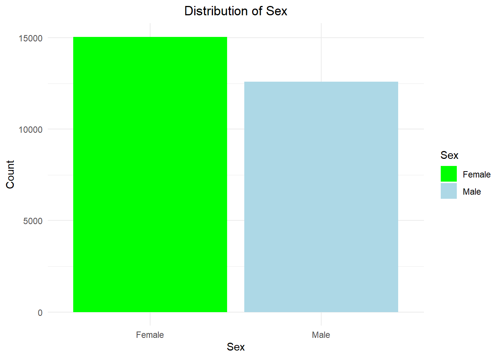
# Plot for "Race", excluding missing valuesFinalData_adult %>%filter(!is.na(Race)) %>%ggplot(aes(x =factor(Race, levels =c("White", "Black", "Asian", "AIAN", "Other")), fill = Race)) +geom_bar() +scale_fill_manual(values =c("White"="blue", "Black"="red", "Asian"="green", "AIAN"="orange", "Other"="purple")) +labs(title ="Distribution of Race", x ="Race", y ="Count") +theme_minimal()+theme(plot.title =element_text(hjust =0.5)) # Centers the title
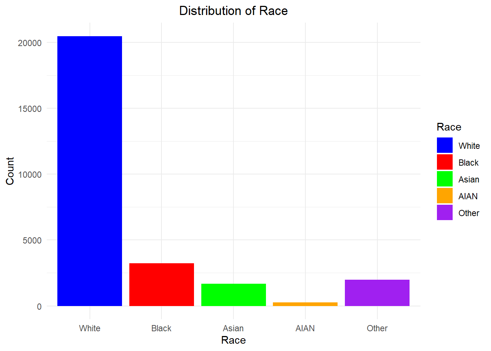
# Plot for "Lung_cancer", excluding missing valuesFinalData_adult %>%#excludes missing valuesfilter(!is.na(Lung_cancer)) %>%ggplot(aes(x = Lung_cancer, fill = Lung_cancer)) +geom_bar() +scale_fill_manual(values =c("Lung Cancer"="red", "No Lung Cancer"="green")) +labs(title ="Distribution of Lung Cancer", x ="Lung Cancer Status", y ="Count")+theme(plot.title =element_text(hjust =0.5)) # Centers the title
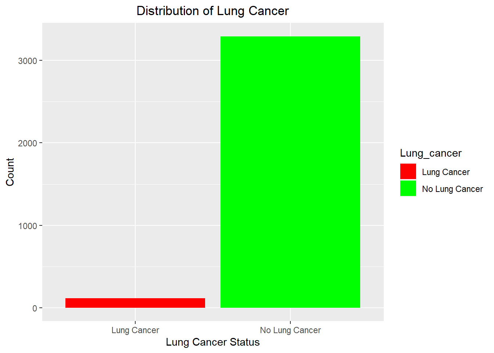
I created histogram for the numeric variables. The age histogram shows a spike at the end of the chart. As per the codebook, ages of 85 and above are grouped together and there are 1002 sample adults within this age range.
# Listing numeric variablesnumeric_vars <-c("Age", "Age_Lung_cancer", "Cigarettes_No", "Alcohol_No")# Creating a function to generate a histogram for a given variable, excluding Missing Valuesgenerate_histogram <-function(variable_name) { FinalData_adult %>%drop_na(!!sym(variable_name)) %>%ggplot(aes(x =!!sym(variable_name))) +geom_histogram(binwidth =1, color ="black", fill ="lightblue") +labs(title =paste("Histogram of", variable_name), x = variable_name, y ="Count") +theme_minimal()+theme(plot.title =element_text(hjust =0.5)) # Centers the title}# Applying the function to each numeric variablelapply(numeric_vars, generate_histogram)
[[1]]
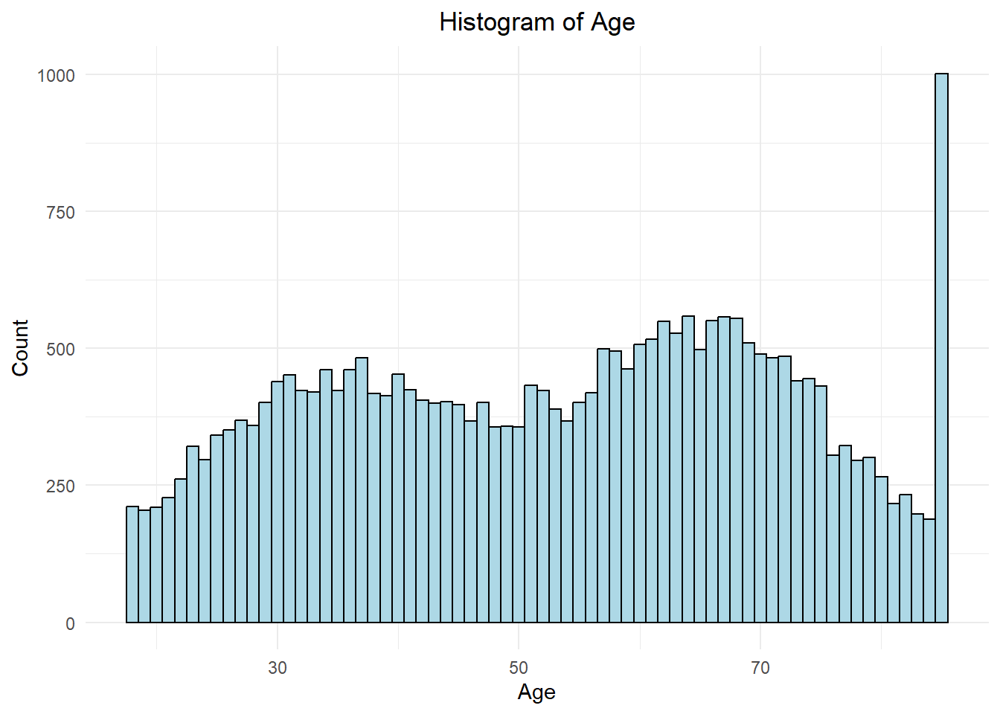
[[2]]
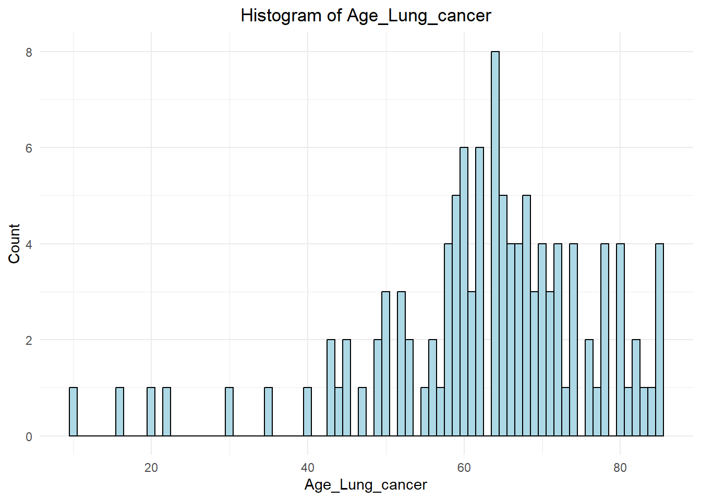
[[3]]
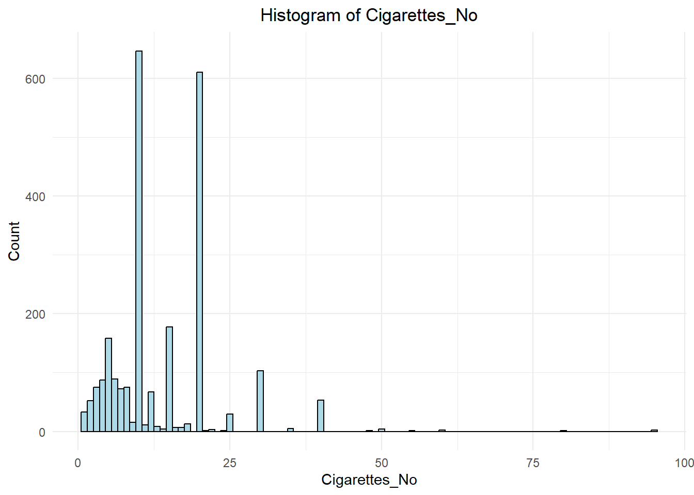
[[4]]
I created bar chart to visualize prevalence of lung cancer by sex. It appears that the proportion of adults with lung cancer is similar within Males and Females.
# Filtering out observations with missing values in Lung_cancer or SexFinalData_adult_filtered <- FinalData_adult %>%filter(!is.na(Lung_cancer) &!is.na(Sex))# Create the plotggplot(FinalData_adult_filtered, aes(x = Sex, fill = Lung_cancer)) +geom_bar(position ="fill") +# "fill" shows proportions within each sex groupscale_fill_manual(values =c("Lung Cancer"="red", "No Lung Cancer"="lightgreen")) +scale_y_continuous(labels = scales::percent_format()) +# Converts the y-axis to percentagelabs(title ="Lung Cancer Status by Sex",x ="Sex",y ="Percentage",fill ="Lung Cancer Status") +theme_minimal() +theme(plot.title =element_text(hjust =0.5)) #Centers the title
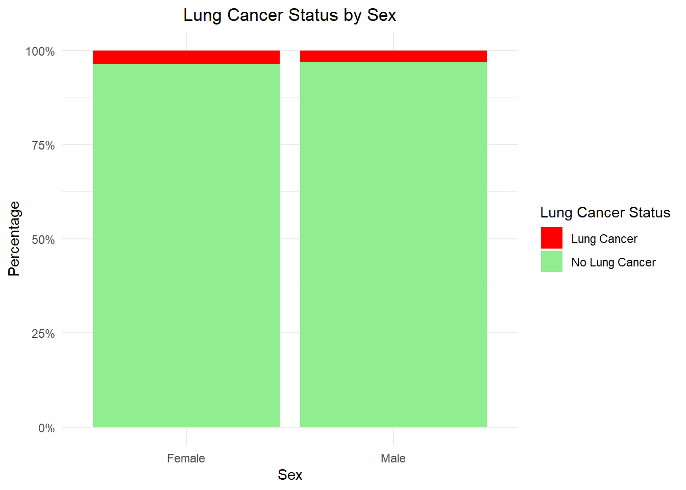
I created bar chart to visualize prevalence of lung cancer by race. It appears lung cancer is common in Asians compared to other races.
# Filter out rows with NA in Lung_cancer or RaceFinalData_adult_filtered <- FinalData_adult %>%filter(!is.na(Lung_cancer) &!is.na(Race))# Create the plotggplot(FinalData_adult_filtered, aes(x = Race, fill = Lung_cancer)) +geom_bar(position ="fill") +# Use "fill" to show proportions within each race groupscale_y_continuous(labels = scales::percent_format()) +# Convert the y-axis to percentagescale_fill_manual(values =c("Lung Cancer"="red", "No Lung Cancer"="lightgreen")) +labs(title ="Lung Cancer Status by Race",x ="Race",y ="Percentage",fill ="Lung Cancer Status") +theme_minimal() +theme(axis.text.x =element_text(angle =45, hjust =1)) # Rotate x-axis labels for better readability
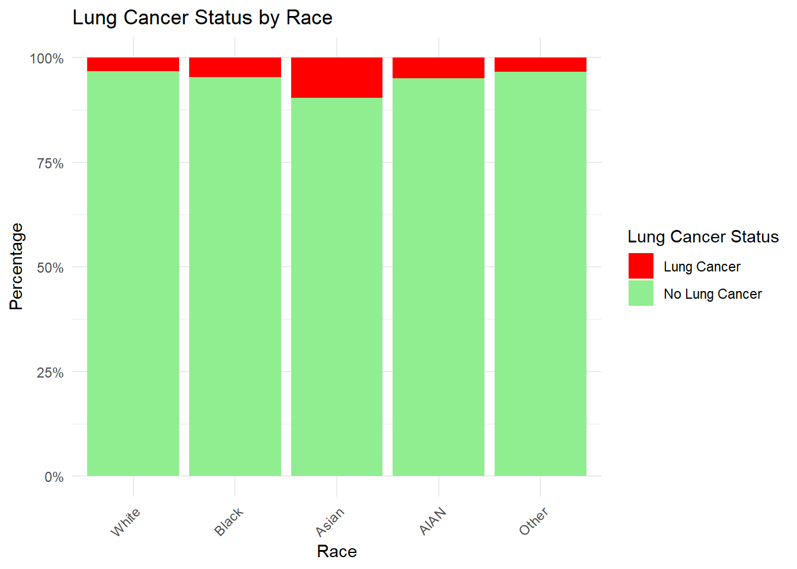
I created a box plot chart to view the distribution of no. of cigarettes smoked in a day by lung cancer status of the sample adults. The median no. of cigarettes smoked by the lung cancer group is higher than the that by the group without lung cancer.
# Filtering out observations with missing values of Lung_cancer or Cigarettes_NoFinalData_adult_filtered <- FinalData_adult %>%filter(!is.na(Lung_cancer) &!is.na(Cigarettes_No))# Creating boxplotggplot(FinalData_adult_filtered, aes(x = Lung_cancer, y = Cigarettes_No, fill = Lung_cancer)) +geom_boxplot() +scale_fill_manual(values =c("Lung Cancer"="red", "No Lung Cancer"="green")) +labs(title ="Number of Cigarettes Smoked by Lung Cancer Status",x ="Lung Cancer Status",y ="Number of Cigarettes") +theme_minimal()+theme(plot.title =element_text(hjust =0.5)) #Centers the title
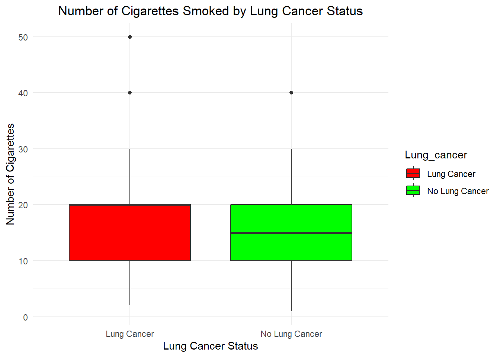
I created a box plot chart to visualize distribution of age of sample adults when they were diagnosed with lung cancer. The median age is approximately at 65 years.
# Filtering to include only individuals with lung cancer to show age at diagnosisFinalData_adult_filtered <- FinalData_adult %>%filter(Lung_cancer =="Lung Cancer"&!is.na(Age_Lung_cancer))# Creating the boxplotggplot(FinalData_adult_filtered, aes(x = Lung_cancer, y = Age_Lung_cancer, fill = Lung_cancer)) +geom_boxplot() +scale_fill_manual(values =c("Lung Cancer"="red")) +labs(title ="Age at Lung Cancer Diagnosis",x ="Lung Cancer Status",y ="Age at Diagnosis") +theme_minimal() +theme(legend.position ="none")+theme(plot.title =element_text(hjust =0.5)) #Centers the title
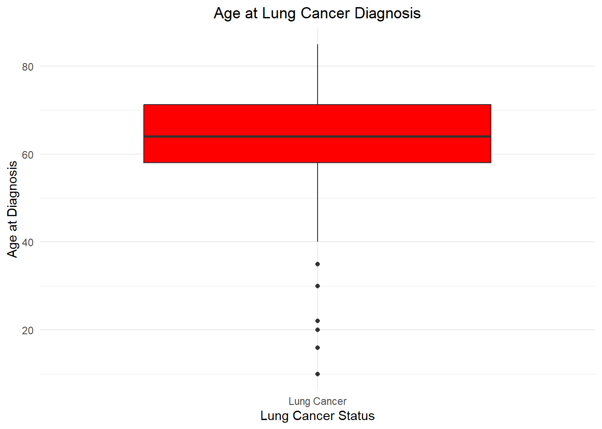
I created a box plot chart to view the distribution of alcohol and cigarette consumption by sex. The median of cigarette consumption is higher for the males compared to females.
# Reshaping the data to long formatFinalData_adult_long <- FinalData_adult %>%select(Sex, Alcohol_No, Cigarettes_No) %>%pivot_longer(cols =c(Alcohol_No, Cigarettes_No), names_to ="Substance", values_to ="Amount") %>%filter(!is.na(Sex), !is.na(Amount)) # Excluding Missing Values# Create the boxplotggplot(FinalData_adult_long, aes(x = Sex, y = Amount, fill = Substance)) +geom_boxplot() +scale_fill_manual(values =c("Alcohol_No"="blue", "Cigarettes_No"="red")) +labs(title ="Distribution of Alcohol and Cigarettes consumption by Sex",x ="Sex",y ="Number",fill ="Substance") +theme_minimal()+theme(plot.title =element_text(hjust =0.5)) #Centers the title
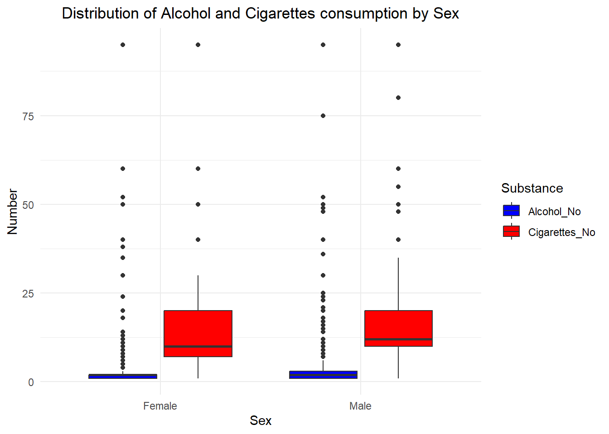
This section is contributed by Kelly Cao
Producing Synthetic Data
I first loaded my packages and used tbl_summary() function to have a clearer idea of what the cleaned data looked like. I then created a synthetic data frame with data.frame() function. I included all of the variables that were included in the previously shown clean data. For any categorical data, I applied the sample() function to each newly created variable, which randomly samples the vector of choice and apply it to the object. In the line of code, I included the vector category title, number of observations, probability associated with the vector, and the replacement function. This allowed me to create variables based on the real data distribution. I then used the same sample() function for the numerical columns, and sampled it from the real columns. I was unable to use rnorm() function as many of the variables still contained NA or missing values. When attempting to create a synthetic Age column, it was noted that the original distribution was not normal, so I proceeded with the sample() function.
# Load required packageslibrary(dplyr)library(purrr)library(lubridate)library(ggplot2)library(here)library(gtsummary)#Reviewing the summary of the Datatbl_summary(CleanStep1_adult, statistic =list(all_continuous() ~"{mean}/{median}/{min}/{max}/{sd}",all_categorical() ~"{n} / {N} ({p}%)"),)
Characteristic
N = 27,6511
SEX_A
1
12,598 / 27,651 (46%)
2
15,050 / 27,651 (54%)
7
1 / 27,651 (<0.1%)
9
2 / 27,651 (<0.1%)
AGEP_A
53/54/18/99/19
RACEALLP_A
1
20,474 / 27,651 (74%)
2
3,231 / 27,651 (12%)
3
1,688 / 27,651 (6.1%)
4
269 / 27,651 (1.0%)
5
214 / 27,651 (0.8%)
6
358 / 27,651 (1.3%)
7
20 / 27,651 (<0.1%)
8
1,377 / 27,651 (5.0%)
9
20 / 27,651 (<0.1%)
LUNGCAN_A
1
116 / 3,430 (3.4%)
2
3,294 / 3,430 (96%)
7
6 / 3,430 (0.2%)
9
14 / 3,430 (0.4%)
Unknown
24,221
LUNGAGETC_A
63/64/10/85/14
Unknown
27,535
CIGNOW_A
14/10/1/99/11
Unknown
25,221
DRKAVG12M_A
3/2/1/99/10
Unknown
9,116
1 n / N (%); Mean/Median/Minimum/Maximum/SD
# Setting a seed for reproducibilityset.seed(123)n_observation <-27651#Creating the data frame for the synthetic dataSynthetic_data <-data.frame(Sex =character(n_observation), Race =character (n_observation), Lung_cancer =character (n_observation), Age =numeric(n_observation), Age_Lung_Cancer =numeric(n_observation), Cigarettes_No =numeric(n_observation), Alcohol_No =numeric(n_observation))#I then proceed to use the sample() function to reference the previous data set and apply a synthesize data set to the newly created variables in "Synthetic_data" data frame.#Variable 1: Sex (Categorical)Synthetic_data$Sex <-sample(c("Male", "Female", "Refused", "Don't Know"), n_observation, replace =TRUE, prob =as.numeric((table(CleanStep1_adult$SEX_A))))#Variable 2: Race (Categorical)Synthetic_data$Race <-sample(c("White", "Black", "Asian", "AIAN", "AIAN Mixed", "Other", "Refused", "Not Ascertained", "Don't Know"), n_observation, replace =TRUE, prob =as.numeric((table(CleanStep1_adult$RACEALLP_A))))#Variable 3: Lung Cancer Status (Categorical)Synthetic_data$Lung_cancer <-sample(c("Lung Cancer", "No Cancer", "Refused", "Don't Know"), n_observation, replace =TRUE, prob =as.numeric((table(CleanStep1_adult$LUNGCAN_A))))#As the following data sets contains a lot of NAs in it, I used the sample() function to replicate the data, even if they were normally distributed.#Variable 4: Age (Numeric)Synthetic_data$Age <-sample(CleanStep1_adult$AGEP_A, size = n_observation,replace =TRUE)#Variable 5: Age when Receiving Lung Cancer (Numeric)Synthetic_data$Age_Lung_Cancer <-sample(CleanStep1_adult$LUNGAGETC_A, size = n_observation, replace =TRUE)#Variable 6: Number of Cigarette use (Numeric)Synthetic_data$Cigarettes_No <-sample(CleanStep1_adult$CIGNOW_A, size = n_observation, replace =TRUE)#Variable 7: Number of Alcohol Use (Numeric)Synthetic_data$Alcohol_No <-sample(CleanStep1_adult$DRKAVG12M_A, size = n_observation, replace =TRUE)#I then check to see if the summary of this newly created data set is comparable to previous one.summary(Synthetic_data)
Sex Race Lung_cancer Age
Length:27651 Length:27651 Length:27651 Min. :18.00
Class :character Class :character Class :character 1st Qu.:37.00
Mode :character Mode :character Mode :character Median :55.00
Mean :53.26
3rd Qu.:68.00
Max. :99.00
Age_Lung_Cancer Cigarettes_No Alcohol_No
Min. :10.00 Min. : 1.00 Min. : 1.000
1st Qu.:58.00 1st Qu.: 8.00 1st Qu.: 1.000
Median :64.00 Median :10.00 Median : 2.000
Mean :62.15 Mean :14.17 Mean : 3.149
3rd Qu.:70.00 3rd Qu.:20.00 3rd Qu.: 3.000
Max. :85.00 Max. :99.00 Max. :99.000
NA's :27514 NA's :25268 NA's :9069
The following tables and plots have been performed with the code provided above from Malika. I readjusted it a few times to match my newly acquired data set Synthetic_data.
# Plot for "Sex", excluding missing valuesSynthetic_data %>%filter(!is.na(Sex), Sex!="Don't Know") %>%#excludes missing values and "Don't Know"ggplot(aes(x = Sex, fill = Sex)) +geom_bar() +scale_fill_manual(values =c("Male"="lightblue", "Female"="green")) +labs(title ="Distribution of Sex", x ="Sex", y ="Count")+theme_minimal() +theme(plot.title =element_text(hjust =0.5)) # Centers the title
# Plot for "Race", excluding missing valuesSynthetic_data %>%filter(!is.na(Race)) %>%ggplot(aes(x =factor(Race, levels =c("White", "Black", "Asian", "AIAN", "Other")), fill = Race)) +geom_bar() +scale_fill_manual(values =c("White"="blue", "Black"="red", "Asian"="green", "AIAN"="orange", "Other"="purple")) +labs(title ="Distribution of Race", x ="Race", y ="Count") +theme_minimal()+theme(plot.title =element_text(hjust =0.5)) # Centers the title
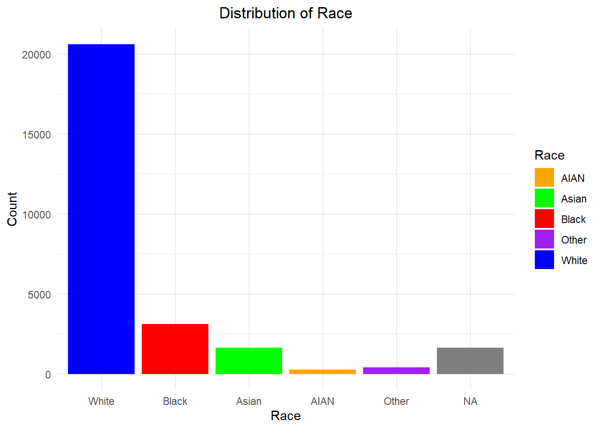
# Plot for "Lung_cancer", excluding missing valuesSynthetic_data %>%#excludes missing valuesfilter(!is.na(Lung_cancer)) %>%ggplot(aes(x = Lung_cancer, fill = Lung_cancer)) +geom_bar() +scale_fill_manual(values =c("Lung Cancer"="red", "No Cancer"="green")) +labs(title ="Distribution of Lung Cancer", x ="Lung Cancer Status", y ="Count")+theme(plot.title =element_text(hjust =0.5)) # Centers the title
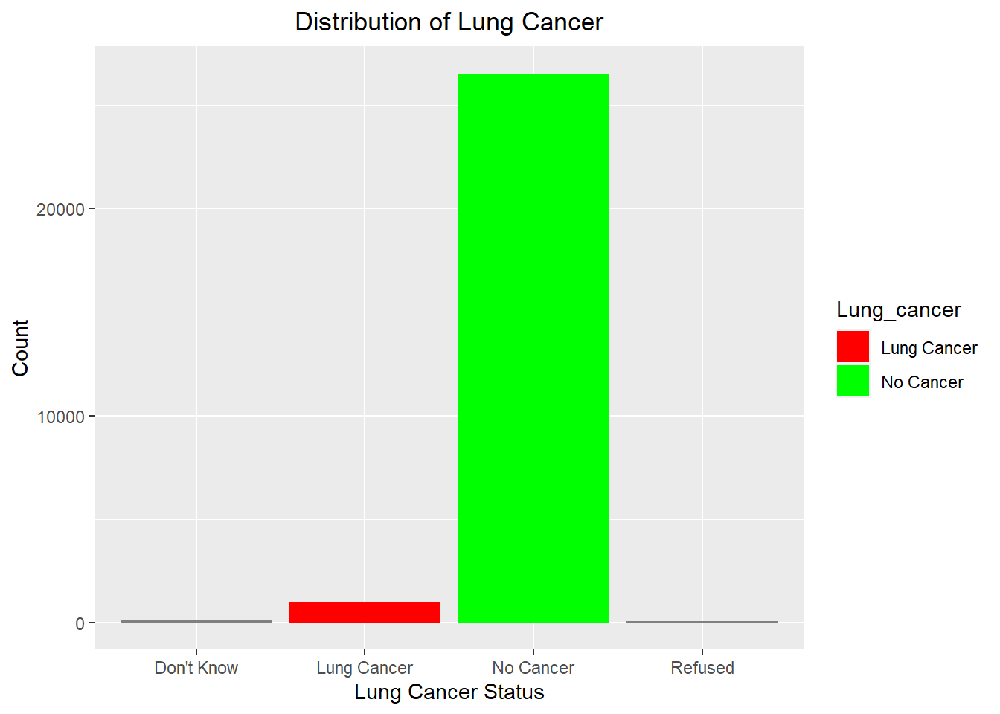
# Listing numeric variablesnumeric_vars <-c("Age", "Age_Lung_Cancer", "Cigarettes_No", "Alcohol_No")# Creating a function to generate a histogram for a given variable, excluding Missing Valuesgenerate_histogram <-function(variable_name) { Synthetic_data %>%filter(!is.na(!!sym(variable_name))) %>%ggplot(aes(x =!!sym(variable_name))) +geom_histogram(binwidth =1, color ="black", fill ="lightblue") +labs(title =paste("Histogram of", variable_name), x = variable_name, y ="Count") +theme_minimal()+theme(plot.title =element_text(hjust =0.5)) # Centers the title}# Applying the function to each numeric variableplots <-lapply(numeric_vars, generate_histogram)plots
[[1]]
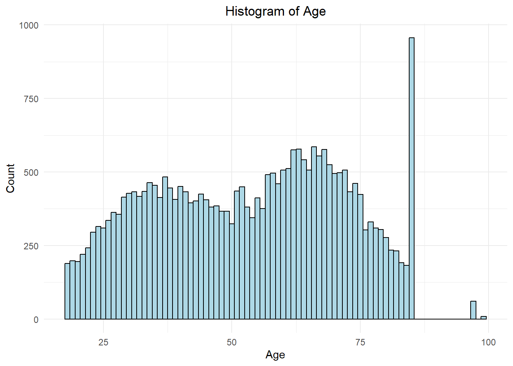
[[2]]
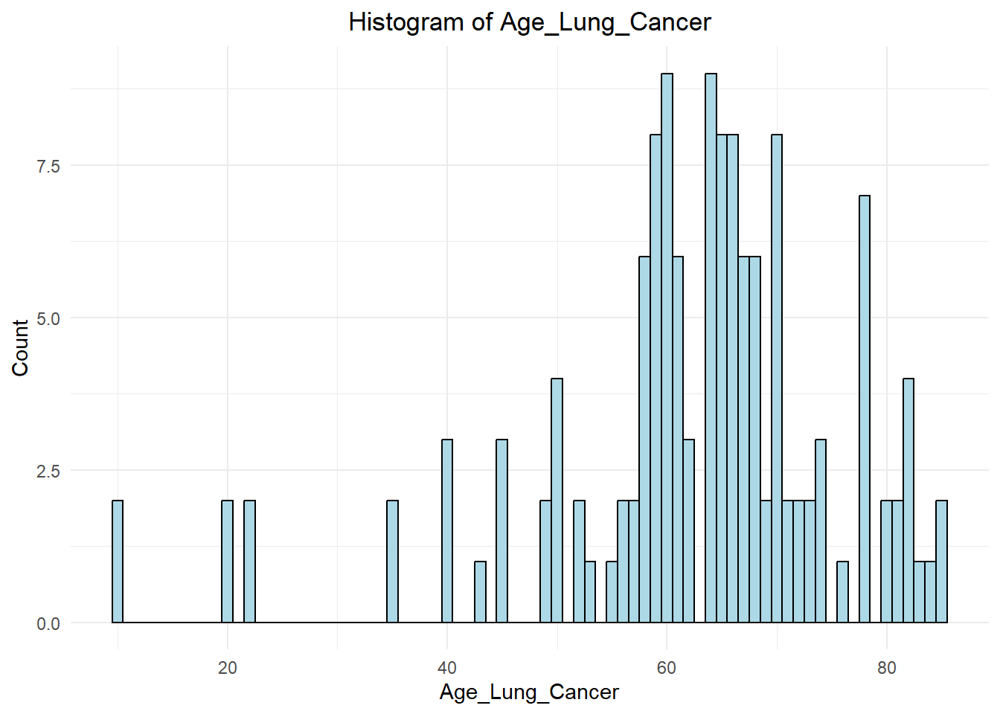
[[3]]
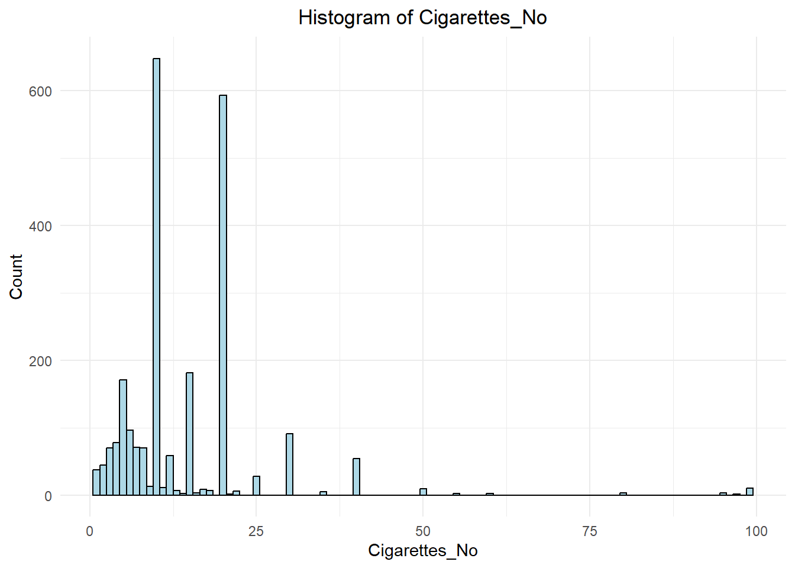
[[4]]
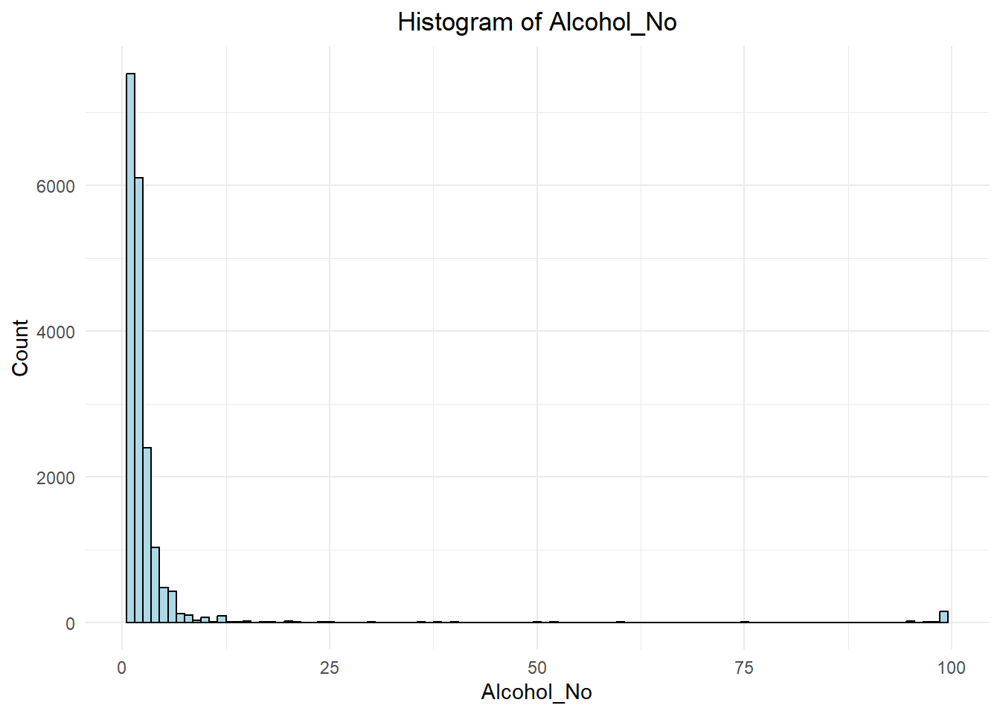
# Filtering out observations with missing values in Lung_cancer or SexSynthetic_data_filtered <- Synthetic_data %>%filter(!is.na(Lung_cancer) &!is.na(Sex), Sex!="Don't Know")# Create the plotggplot(Synthetic_data_filtered, aes(x = Sex, fill = Lung_cancer)) +geom_bar(position ="fill") +# "fill" shows proportions within each sex groupscale_fill_manual(values =c("Lung Cancer"="red", "No Cancer"="lightgreen")) +scale_y_continuous(labels = scales::percent_format()) +# Converts the y-axis to percentagelabs(title ="Lung Cancer Status by Sex",x ="Sex",y ="Percentage",fill ="Lung Cancer Status") +theme_minimal() +theme(plot.title =element_text(hjust =0.5)) #Centers the title
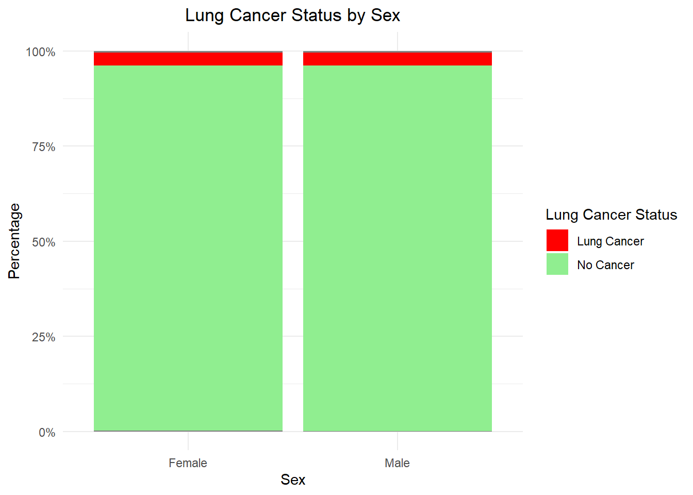
# Filter out rows with NA in Lung_cancer or RaceSynthetic_data_filtered <- Synthetic_data %>%filter(!is.na(Lung_cancer) &!is.na(Race))# Create the plotggplot(Synthetic_data_filtered, aes(x = Race, fill = Lung_cancer)) +geom_bar(position ="fill") +# Use "fill" to show proportions within each race groupscale_y_continuous(labels = scales::percent_format()) +# Convert the y-axis to percentagescale_fill_manual(values =c("Lung Cancer"="red", "No Cancer"="lightgreen")) +labs(title ="Lung Cancer Status by Race",x ="Race",y ="Percentage",fill ="Lung Cancer Status") +theme_minimal() +theme(axis.text.x =element_text(angle =45, hjust =1)) # Rotate x-axis labels for better readability
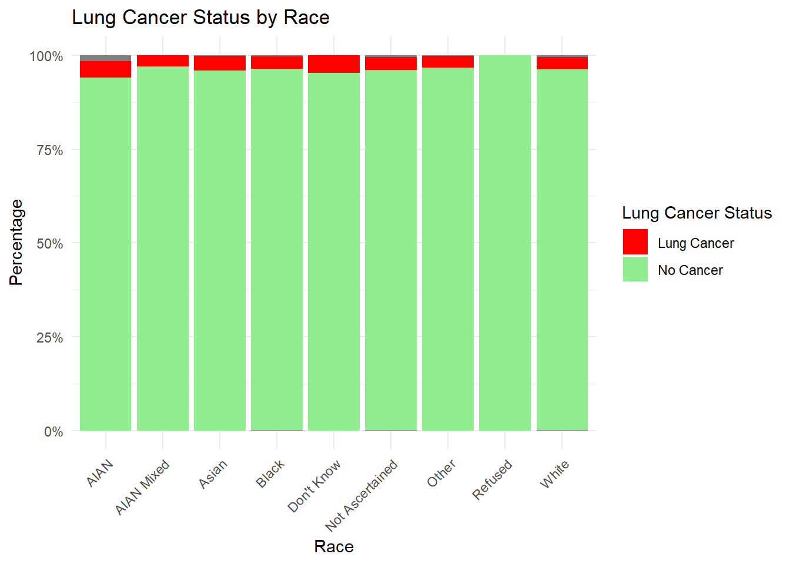
# Filtering out observations with missing values of Lung_cancer or Cigarettes_NoFinalData_adult_filtered <- Synthetic_data %>%filter(!is.na(Lung_cancer) &!is.na(Cigarettes_No), Lung_cancer!="Don't Know", Lung_cancer!="Refused")# Creating boxplotggplot(FinalData_adult_filtered, aes(x = Lung_cancer, y = Cigarettes_No, fill = Lung_cancer)) +geom_boxplot() +scale_fill_manual(values =c("Lung Cancer"="red", "No Cancer"="green")) +labs(title ="Number of Cigarettes Smoked by Lung Cancer Status",x ="Lung Cancer Status",y ="Number of Cigarettes") +theme_minimal()+theme(plot.title =element_text(hjust =0.5)) #Centers the title
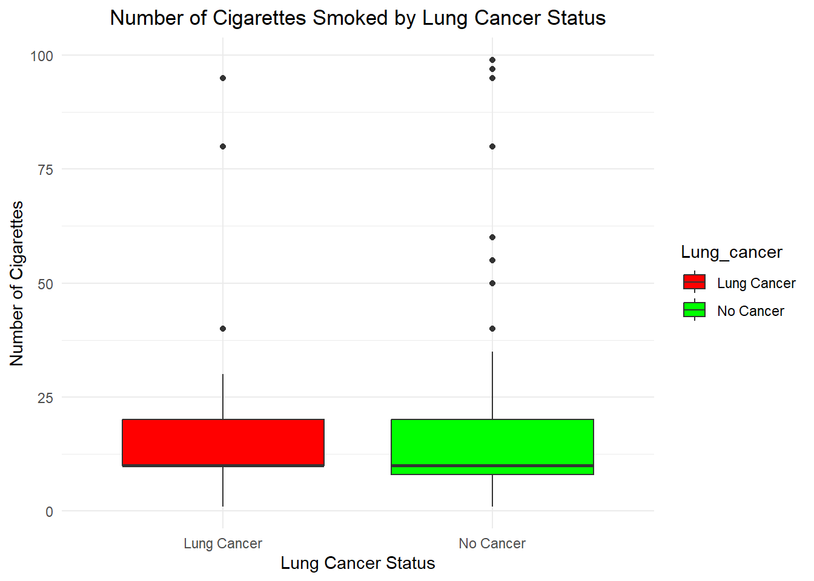
# Filtering to include only individuals with lung cancer to show age at diagnosisFinalData_adult_filtered <- Synthetic_data %>%filter(Lung_cancer =="Lung Cancer"&!is.na(Age_Lung_Cancer), Lung_cancer!="Don't Know", Lung_cancer!="Refused")# Creating the boxplotggplot(FinalData_adult_filtered, aes(x = Lung_cancer, y = Age_Lung_Cancer, fill = Lung_cancer)) +geom_boxplot() +scale_fill_manual(values =c("Lung Cancer"="red")) +labs(title ="Age at Lung Cancer Diagnosis",x ="Lung Cancer Status",y ="Age at Diagnosis") +theme_minimal() +theme(legend.position ="none")+theme(plot.title =element_text(hjust =0.5)) #Centers the title
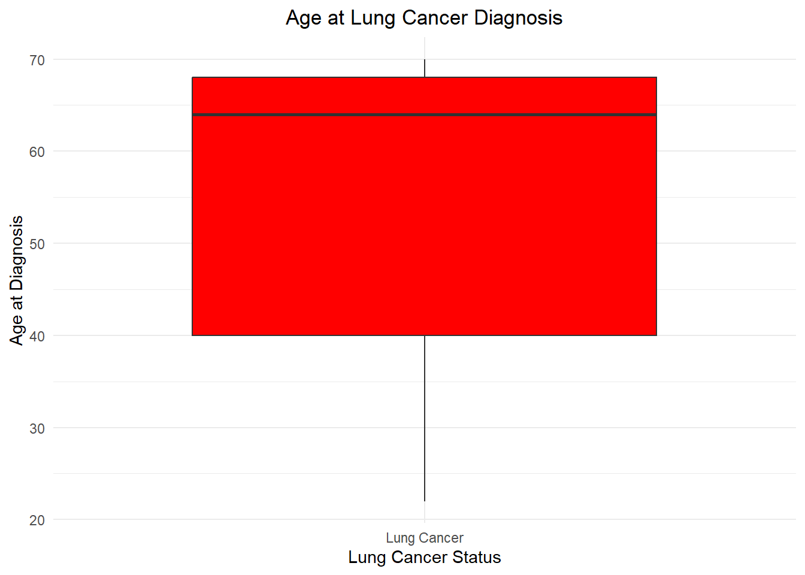
# Reshaping the data to long formatFinalData_adult_long <- Synthetic_data %>%select(Sex, Alcohol_No, Cigarettes_No) %>%pivot_longer(cols =c(Alcohol_No, Cigarettes_No), names_to ="Substance", values_to ="Amount") %>%filter(!is.na(Sex), !is.na(Amount), Sex!="Don't Know") # Excluding Missing Values# Create the boxplotggplot(FinalData_adult_long, aes(x = Sex, y = Amount, fill = Substance)) +geom_boxplot() +scale_fill_manual(values =c("Alcohol_No"="blue", "Cigarettes_No"="red")) +labs(title ="Distribution of Alcohol and Cigarettes consumption by Sex",x ="Sex",y ="Number",fill ="Substance") +theme_minimal()+theme(plot.title =element_text(hjust =0.5)) #Centers the title
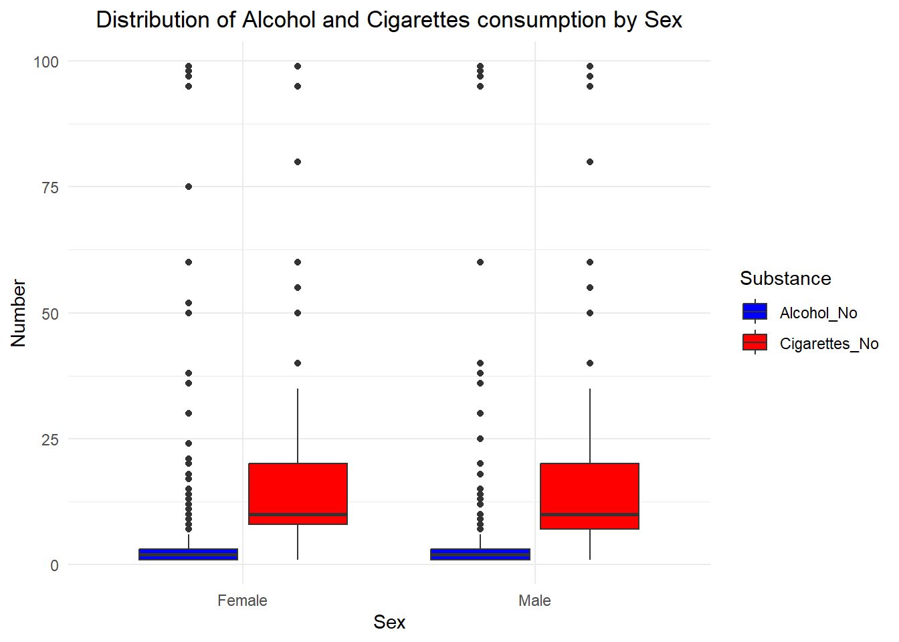
Discussion and Conclusion
When looking at the summary table, once can see that for the categorical variables, the proportions for each category are fairly similar, with the exception of the Age_Lung_Cancer variable. I was unable to replicate all of the missing data points (NA) that made up most of the observation for that variable. As for the numerical variables, the statistical information for each variables are fairly similar.
Visually, when looking at the plots, most of them are fairly similar. The histogram visually shows the distribution that was shown with the previous data set. The bar graphs were all fairly similar. The boxplot showed greater differences, suggesting that my data set had greater variance.